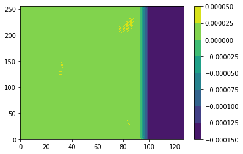
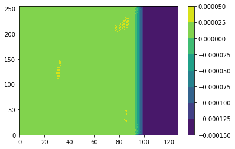
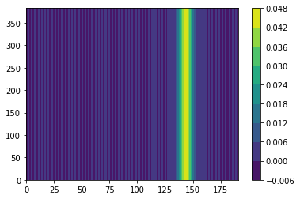
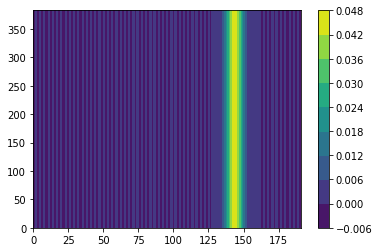

Contents
# Step 1: Install FFTW
!apt-get install libfftw3-dev
!apt-get install libfftw3-mpi-dev
# Step 2: Set paths for Dedalus installation
import os
os.environ['MPI_INCLUDE_PATH'] = "/usr/lib/x86_64-linux-gnu/openmpi/include"
os.environ['MPI_LIBRARY_PATH'] = "/usr/lib/x86_64-linux-gnu"
os.environ['FFTW_INCLUDE_PATH'] = "/usr/include"
os.environ['FFTW_LIBRARY_PATH'] = "/usr/lib/x86_64-linux-gnu"
# Step 3: Install Dedalus using pip
!pip3 install --no-cache http://github.com/dedalusproject/dedalus/zipball/d3/
/bin/bash: apt-get: command not found
/bin/bash: apt-get: command not found
Collecting http://github.com/dedalusproject/dedalus/zipball/d3/
Downloading http://github.com/dedalusproject/dedalus/zipball/d3/
- 10kB 22.2MB/s
\ 20kB 33.5MB/s
| 30kB 43.0MB/s
/ 40kB 49.4MB/s
- 51kB 56.1MB/s
\ 61kB 62.5MB/s
| 71kB 64.1MB/s
/ 81kB 68.1MB/s
- 92kB 68.6MB/s
\ 102kB 71.1MB/s
| 112kB 96.6MB/s
/ 122kB 103.2MB/s
- 133kB 102.6MB/s
\ 143kB 104.7MB/s
| 153kB 106.5MB/s
/ 163kB 106.8MB/s
- 174kB 100.9MB/s
\ 184kB 103.3MB/s
| 194kB 102.2MB/s
/ 204kB 91.5MB/s
- 215kB 85.3MB/s
\ 225kB 77.2MB/s
| 235kB 74.8MB/s
/ 245kB 73.8MB/s
- 256kB 71.3MB/s
\ 266kB 63.5MB/s
| 276kB 69.2MB/s
/ 286kB 66.9MB/s
- 296kB 65.4MB/s
\ 307kB 63.4MB/s
| 317kB 61.3MB/s
/ 327kB 6.8MB/s
- 337kB 6.7MB/s
\ 348kB 6.7MB/s
| 358kB 6.7MB/s
/ 368kB 6.2MB/s
- 378kB 6.1MB/s
\ 389kB 6.1MB/s
| 399kB 6.1MB/s
/ 409kB 6.1MB/s
- 419kB 6.2MB/s
\ 430kB 33.8MB/s
| 440kB 35.7MB/s
/ 450kB 35.4MB/s
- 460kB 36.2MB/s
\ 471kB 70.4MB/s
| 481kB 75.6MB/s
/ 491kB 81.8MB/s
- 501kB 79.6MB/s
\ 512kB 75.3MB/s
| 522kB 74.4MB/s
/ 532kB 74.3MB/s
- 542kB 67.8MB/s
\ 552kB 67.4MB/s
| 563kB 66.9MB/s
/ 573kB 68.2MB/s
- 583kB 69.8MB/s
\ 593kB 6.4MB/s
| 604kB 6.3MB/s
/ 614kB 6.3MB/s
- 624kB 6.4MB/s
\ 634kB 6.4MB/s
| 645kB 6.4MB/s
/ 655kB 6.4MB/s
- 665kB 6.4MB/s
\ 675kB 6.3MB/s
| 686kB 6.0MB/s
/ 696kB 26.0MB/s
- 706kB 26.7MB/s
\ 716kB 26.5MB/s
| 727kB 24.9MB/s
/ 737kB 24.1MB/s
- 747kB 23.5MB/s
\ 757kB 6.3MB/s
| 768kB 6.3MB/s
/ 778kB 6.4MB/s
- 788kB 6.6MB/s
\ 798kB 7.4MB/s
| 808kB 7.5MB/s
/ 819kB 7.1MB/s
- 829kB 7.0MB/s
\ 839kB 7.0MB/s
| 849kB 7.0MB/s
/ 860kB 37.5MB/s
- 870kB 37.4MB/s
\ 880kB 38.2MB/s
| 890kB 38.8MB/s
/ 901kB 38.9MB/s
- 911kB 37.3MB/s
\ 921kB 56.8MB/s
| 931kB 67.9MB/s
/ 942kB 38.2MB/s
- 952kB 40.0MB/s
\ 962kB 39.3MB/s
| 972kB 39.9MB/s
/ 983kB 40.4MB/s
- 993kB 31.7MB/s
\ 1.0MB 31.4MB/s
| 1.0MB 31.9MB/s
/ 1.0MB 6.2MB/s
- 1.0MB 6.2MB/s
\ 1.0MB 6.8MB/s
| 1.1MB 6.8MB/s
/ 1.1MB 6.9MB/s
- 1.1MB 6.9MB/s
\ 1.1MB 6.4MB/s
| 1.1MB 6.6MB/s
/ 1.1MB 6.6MB/s
- 1.1MB 6.7MB/s
\ 1.1MB 47.2MB/s
| 1.1MB 48.2MB/s
/ 1.1MB 49.8MB/s
- 1.2MB 35.2MB/s
\ 1.2MB 34.3MB/s
| 1.2MB 33.4MB/s
/ 1.2MB 49.4MB/s
- 1.2MB 48.3MB/s
\ 1.2MB 49.0MB/s
| 1.2MB 51.1MB/s
/ 1.2MB 36.6MB/s
- 1.2MB 36.0MB/s
\ 1.2MB 35.0MB/s
| 1.3MB 49.8MB/s
/ 1.3MB 47.8MB/s
- 1.3MB 48.6MB/s
\ 1.3MB 56.5MB/s
| 1.3MB 41.8MB/s
/ 1.3MB 9.2MB/s
- 1.3MB 9.1MB/s
\ 1.3MB 9.8MB/s
| 1.3MB 9.3MB/s
/ 1.4MB 9.3MB/s
- 1.4MB 9.3MB/s
\ 1.4MB 9.4MB/s
| 1.4MB 9.2MB/s
/ 1.4MB 9.0MB/s
- 1.4MB 9.6MB/s
\ 1.4MB 49.0MB/s
| 1.4MB 49.2MB/s
/ 1.4MB 50.3MB/s
- 1.4MB 4.7MB/s
\ 1.5MB 3.8MB/s
| 1.5MB 3.8MB/s
/ 1.5MB 3.8MB/s
- 1.5MB 3.8MB/s
\ 1.5MB 3.8MB/s
| 1.5MB 3.9MB/s
/ 1.5MB 3.9MB/s
- 1.5MB 3.9MB/s
\ 1.5MB 3.8MB/s
| 1.5MB 16.8MB/s
/ 1.6MB 40.5MB/s
- 1.6MB 23.5MB/s
\ 1.6MB 23.7MB/s
| 1.6MB 24.6MB/s
/ 1.6MB 24.2MB/s
- 1.6MB 23.9MB/s
\ 1.6MB 23.8MB/s
| 1.6MB 24.1MB/s
/ 1.6MB 25.0MB/s
- 1.6MB 25.2MB/s
\ 1.7MB 36.9MB/s
| 1.7MB 113.8MB/s
/ 1.7MB 120.2MB/s
- 1.7MB 118.4MB/s
\ 1.7MB 114.7MB/s
| 1.7MB 114.0MB/s
/ 1.7MB 114.0MB/s
- 1.7MB 115.2MB/s
\ 1.7MB 106.9MB/s
| 1.8MB 104.8MB/s
/ 1.8MB 103.9MB/s
- 1.8MB 111.9MB/s
\ 1.8MB 35.1MB/s
| 1.8MB 33.9MB/s
/ 1.8MB 35.7MB/s
- 1.8MB 36.0MB/s
\ 1.8MB 16.1MB/s
| 1.8MB 16.1MB/s
/ 1.8MB 16.2MB/s
- 1.9MB 16.2MB/s
\ 1.9MB 16.2MB/s
| 1.9MB 16.3MB/s
/ 1.9MB 23.6MB/s
- 1.9MB 24.1MB/s
\ 1.9MB 24.2MB/s
| 1.9MB 24.1MB/s
/ 1.9MB 137.1MB/s
- 1.9MB 142.2MB/s
\ 1.9MB 153.1MB/s
| 2.0MB 150.3MB/s
/ 2.0MB 137.7MB/s
- 2.0MB 127.5MB/s
\ 2.0MB 136.5MB/s
| 2.0MB 65.4MB/s
/ 2.0MB 64.2MB/s
- 2.0MB 66.9MB/s
\ 2.0MB 10.6MB/s
| 2.0MB 10.4MB/s
/ 2.0MB 10.4MB/s
- 2.1MB 10.3MB/s
\ 2.1MB 10.3MB/s
| 2.1MB 10.3MB/s
/ 2.1MB 10.4MB/s
- 2.1MB 11.2MB/s
\ 2.1MB 11.1MB/s
| 2.1MB 11.0MB/s
/ 2.1MB 20.3MB/s
- 2.1MB 20.3MB/s
\ 2.2MB 20.4MB/s
| 2.2MB 20.6MB/s
/ 2.2MB 20.6MB/s
- 2.2MB 20.6MB/s
\ 2.2MB 20.5MB/s
| 2.2MB 20.7MB/s
/ 2.2MB 19.1MB/s
- 2.2MB 18.9MB/s
\ 2.2MB 66.2MB/s
| 2.2MB 65.0MB/s
/ 2.3MB 58.5MB/s
- 2.3MB 57.1MB/s
\ 2.3MB 57.8MB/s
| 2.3MB 57.3MB/s
/ 2.3MB 56.4MB/s
- 2.3MB 57.6MB/s
\ 2.3MB 79.4MB/s
| 2.3MB 75.9MB/s
/ 2.3MB 71.6MB/s
- 2.3MB 75.3MB/s
\ 2.4MB 82.6MB/s
| 2.4MB 74.6MB/s
/ 2.4MB 79.6MB/s
- 2.4MB 78.3MB/s
\ 2.4MB 78.8MB/s
| 2.4MB 77.8MB/s
/ 2.4MB 77.3MB/s
- 2.4MB 62.5MB/s
\ 2.4MB 60.4MB/s
| 2.4MB 64.5MB/s
/ 2.5MB 66.4MB/s
- 2.5MB 27.7MB/s
\ 2.5MB 27.6MB/s
| 2.5MB 26.7MB/s
/ 2.5MB 25.9MB/s
- 2.5MB 25.9MB/s
\ 2.5MB 26.5MB/s
| 2.5MB 30.1MB/s
/ 2.5MB 3.7MB/s
- 2.5MB 3.7MB/s
\ 2.6MB 3.7MB/s
| 2.6MB 4.0MB/s
/ 2.6MB 4.0MB/s
- 2.6MB 4.0MB/s
\ 2.6MB 4.0MB/s
| 2.6MB 4.0MB/s
/ 2.6MB 4.0MB/s
- 2.6MB 4.0MB/s
\ 2.6MB 92.7MB/s
| 2.7MB 105.4MB/s
/ 2.7MB 116.7MB/s
- 2.7MB 107.5MB/s
\ 2.7MB 116.6MB/s
| 2.7MB 112.3MB/s
/ 2.7MB 118.9MB/s
- 2.7MB 112.9MB/s
\ 2.7MB 108.1MB/s
| 2.7MB 112.6MB/s
/ 2.7MB 107.0MB/s
- 2.8MB 102.3MB/s
\ 2.8MB 100.1MB/s
| 2.8MB 113.0MB/s
/ 2.8MB 116.1MB/s
- 2.8MB 119.9MB/s
\ 2.8MB 136.0MB/s
| 2.8MB 145.6MB/s
/ 2.8MB 150.4MB/s
- 2.8MB 145.7MB/s
\ 2.8MB 163.3MB/s
| 2.9MB 163.9MB/s
/ 2.9MB 6.8MB/s
- 2.9MB 6.7MB/s
\ 2.9MB 6.7MB/s
| 2.9MB 6.7MB/s
/ 2.9MB 6.6MB/s
- 2.9MB 6.6MB/s
\ 2.9MB 6.6MB/s
| 2.9MB 4.6MB/s
/ 2.9MB 4.6MB/s
- 3.0MB 4.6MB/s
\ 3.0MB 12.3MB/s
| 3.0MB 12.0MB/s
/ 3.0MB 12.0MB/s
- 3.0MB 12.0MB/s
\ 3.0MB 11.3MB/s
| 3.0MB 11.2MB/s
/ 3.0MB 11.2MB/s
- 3.0MB 43.0MB/s
\ 3.1MB 42.5MB/s
| 3.1MB 41.4MB/s
/ 3.1MB 47.2MB/s
- 3.1MB 55.3MB/s
\ 3.1MB 58.9MB/s
| 3.1MB 63.3MB/s
/ 3.1MB 90.1MB/s
- 3.1MB 99.4MB/s
\ 3.1MB 90.8MB/s
| 3.1MB 93.8MB/s
/ 3.2MB 94.3MB/s
- 3.2MB 96.1MB/s
\ 3.2MB 104.7MB/s
| 3.2MB 106.4MB/s
/ 3.2MB 16.1MB/s
- 3.2MB 15.9MB/s
\ 3.2MB 16.0MB/s
| 3.2MB 16.0MB/s
/ 3.2MB 16.2MB/s
- 3.2MB 16.5MB/s
\ 3.3MB 16.5MB/s
| 3.3MB 11.2MB/s
/ 3.3MB 11.1MB/s
- 3.3MB 11.0MB/s
\ 3.3MB 25.3MB/s
| 3.3MB 25.2MB/s
/ 3.3MB 25.6MB/s
- 3.3MB 4.0MB/s
\ 3.3MB 4.0MB/s
| 3.3MB 4.0MB/s
/ 3.4MB 4.0MB/s
- 3.4MB 4.5MB/s
\ 3.4MB 4.5MB/s
| 3.4MB 4.5MB/s
/ 3.4MB 3.9MB/s
- 3.4MB 3.9MB/s
\ 3.4MB 3.9MB/s
| 3.4MB 21.3MB/s
/ 3.4MB 21.8MB/s
- 3.5MB 21.9MB/s
\ 3.5MB 22.1MB/s
| 3.5MB 21.6MB/s
/ 3.5MB 21.5MB/s
- 3.5MB 21.2MB/s
\ 3.5MB 69.3MB/s
| 3.5MB 70.6MB/s
/ 3.5MB 75.0MB/s
- 3.5MB 90.8MB/s
\ 3.5MB 82.9MB/s
| 3.6MB 79.7MB/s
/ 3.6MB 80.8MB/s
- 3.6MB 86.9MB/s
\ 3.6MB 84.4MB/s
| 3.6MB 85.6MB/s
/ 3.6MB 88.5MB/s
- 3.6MB 89.2MB/s
\ 3.6MB 89.6MB/s
| 3.6MB 85.5MB/s
/ 3.6MB 96.5MB/s
- 3.7MB 88.5MB/s
\ 3.7MB 84.3MB/s
| 3.7MB 87.7MB/s
/ 3.7MB 88.4MB/s
- 3.7MB 88.5MB/s
\ 3.7MB 91.6MB/s
| 3.7MB 92.7MB/s
/ 3.7MB 94.8MB/s
- 3.7MB 98.3MB/s
\ 3.7MB 110.3MB/s
| 3.8MB 119.2MB/s
/ 3.8MB 116.0MB/s
- 3.8MB 118.0MB/s
\ 3.8MB 115.3MB/s
| 3.8MB 107.0MB/s
/ 3.8MB 103.4MB/s
- 3.8MB 107.8MB/s
\ 3.8MB 99.7MB/s
| 3.8MB 97.7MB/s
/ 3.9MB 96.0MB/s
- 3.9MB 100.3MB/s
\ 3.9MB 14.3MB/s
| 3.9MB 14.3MB/s
/ 3.9MB 14.5MB/s
- 3.9MB 10.8MB/s
\ 3.9MB 10.8MB/s
| 3.9MB 10.7MB/s
/ 3.9MB 10.8MB/s
- 3.9MB 10.8MB/s
\ 4.0MB 9.9MB/s
| 4.0MB 9.9MB/s
/ 4.0MB 23.6MB/s
- 4.0MB 23.1MB/s
\ 4.0MB 22.9MB/s
| 4.0MB 51.1MB/s
/ 4.0MB 20.1MB/s
- 4.0MB 20.0MB/s
\ 4.0MB 20.0MB/s
| 4.0MB 19.5MB/s
/ 4.1MB 23.0MB/s
- 4.1MB 23.1MB/s
\ 4.1MB 23.6MB/s
| 4.1MB 20.8MB/s
/ 4.1MB 20.6MB/s
- 4.1MB 20.5MB/s
\ 4.1MB 51.6MB/s
| 4.1MB 54.6MB/s
/ 4.1MB 53.5MB/s
- 4.1MB 52.5MB/s
\ 4.2MB 52.5MB/s
| 4.2MB 51.7MB/s
/ 4.2MB 56.0MB/s
- 4.2MB 2.4MB/s
\ 4.2MB 2.4MB/s
| 4.2MB 2.4MB/s
/ 4.2MB 2.4MB/s
- 4.2MB 2.4MB/s
\ 4.2MB 2.4MB/s
| 4.2MB 2.5MB/s
/ 4.3MB 2.5MB/s
- 4.3MB 2.5MB/s
\ 4.3MB 2.5MB/s
| 4.3MB 145.2MB/s
/ 4.3MB 157.6MB/s
- 4.3MB 158.5MB/s
\ 4.3MB 171.5MB/s
| 4.3MB 164.1MB/s
/ 4.3MB 159.2MB/s
- 4.4MB 154.4MB/s
\ 4.4MB 157.8MB/s
| 4.4MB 157.6MB/s
/ 4.4MB 157.1MB/s
- 4.4MB 168.2MB/s
\ 4.4MB 164.6MB/s
| 4.4MB 161.0MB/s
/ 4.4MB 150.2MB/s
- 4.4MB 149.7MB/s
\ 4.4MB 149.9MB/s
| 4.5MB 149.7MB/s
/ 4.5MB 160.8MB/s
- 4.5MB 157.0MB/s
\ 4.5MB 151.0MB/s
| 4.5MB 137.3MB/s
/ 4.5MB 47.3MB/s
- 4.5MB 45.9MB/s
\ 4.5MB 45.6MB/s
| 4.5MB 47.0MB/s
/ 4.5MB 46.3MB/s
- 4.6MB 44.7MB/s
\ 4.6MB 43.4MB/s
| 4.6MB 43.5MB/s
/ 4.6MB 43.2MB/s
- 4.6MB 43.3MB/s
\ 4.6MB 109.6MB/s
| 4.6MB 115.7MB/s
/ 4.6MB 113.9MB/s
- 4.6MB 110.2MB/s
\ 4.6MB 103.0MB/s
| 4.7MB 110.0MB/s
/ 4.7MB 112.3MB/s
- 4.7MB 115.5MB/s
\ 4.7MB 100.6MB/s
| 4.7MB 94.3MB/s
/ 4.7MB 88.2MB/s
- 4.7MB 81.7MB/s
\ 4.7MB 28.4MB/s
| 4.7MB 28.0MB/s
/ 4.8MB 28.8MB/s
- 4.8MB 20.6MB/s
\ 4.8MB 20.4MB/s
| 4.8MB 20.2MB/s
/ 4.8MB 7.9MB/s
- 4.8MB 7.9MB/s
\ 4.8MB 7.9MB/s
| 4.8MB 8.0MB/s
/ 4.8MB 8.5MB/s
- 4.8MB 8.3MB/s
\ 4.9MB 8.3MB/s
| 4.9MB 9.4MB/s
/ 4.9MB 9.2MB/s
- 4.9MB 9.2MB/s
\ 4.9MB 33.7MB/s
| 4.9MB 35.4MB/s
/ 4.9MB 35.3MB/s
- 4.9MB 35.0MB/s
\ 4.9MB 71.7MB/s
| 4.9MB 15.0MB/s
/ 5.0MB 14.9MB/s
- 5.0MB 14.9MB/s
\ 5.0MB 15.4MB/s
| 5.0MB 6.9MB/s
/ 5.0MB 6.9MB/s
- 5.0MB 6.0MB/s
\ 5.0MB 6.0MB/s
| 5.0MB 6.0MB/s
/ 5.0MB 6.0MB/s
- 5.0MB 8.2MB/s
\ 5.1MB 8.2MB/s
| 5.1MB 8.1MB/s
/ 5.1MB 8.0MB/s
- 5.1MB 22.1MB/s
\ 5.1MB 22.4MB/s
| 5.1MB 41.2MB/s
/ 5.1MB 16.3MB/s
- 5.1MB 15.7MB/s
\ 5.1MB 15.6MB/s
| 5.2MB 8.4MB/s
/ 5.2MB 6.5MB/s
- 5.2MB 6.5MB/s
\ 5.2MB 6.6MB/s
| 5.2MB 6.6MB/s
/ 5.2MB 6.0MB/s
- 5.2MB 6.0MB/s
\ 5.2MB 7.7MB/s
| 5.2MB 7.9MB/s
/ 5.2MB 7.9MB/s
- 5.3MB 17.1MB/s
\ 5.3MB 33.0MB/s
| 5.3MB 14.6MB/s
/ 5.3MB 14.4MB/s
- 5.3MB 14.5MB/s
\ 5.3MB 9.2MB/s
| 5.3MB 9.2MB/s
/ 5.3MB 9.2MB/s
- 5.3MB 6.8MB/s
\ 5.3MB 6.8MB/s
| 5.4MB 6.7MB/s
/ 5.4MB 6.3MB/s
- 5.4MB 8.3MB/s
\ 5.4MB 8.3MB/s
| 5.4MB 8.3MB/s
/ 5.4MB 12.9MB/s
- 5.4MB 12.9MB/s
\ 5.4MB 12.8MB/s
| 5.4MB 15.0MB/s
/ 5.4MB 15.1MB/s
- 5.5MB 15.1MB/s
\ 5.5MB 20.8MB/s
| 5.5MB 9.9MB/s
/ 5.5MB 7.2MB/s
- 5.5MB 7.1MB/s
\ 5.5MB 7.0MB/s
| 5.5MB 6.9MB/s
/ 5.5MB 6.9MB/s
- 5.5MB 8.5MB/s
\ 5.6MB 7.6MB/s
| 5.6MB 5.5MB/s
/ 5.6MB 5.5MB/s
- 5.6MB 7.8MB/s
\ 5.6MB 10.8MB/s
| 5.6MB 10.8MB/s
/ 5.6MB 13.0MB/s
- 5.6MB 13.1MB/s
\ 5.6MB 9.9MB/s
| 5.6MB 9.9MB/s
/ 5.7MB 7.7MB/s
- 5.7MB 12.3MB/s
\ 5.7MB 12.3MB/s
| 5.7MB 12.5MB/s
/ 5.7MB 10.5MB/s
- 5.7MB 8.9MB/s
\ 5.7MB 8.9MB/s
| 5.7MB 6.2MB/s
/ 5.7MB 7.3MB/s
- 5.7MB 7.3MB/s
\ 5.8MB 10.8MB/s
| 5.8MB 10.8MB/s
/ 5.8MB 10.7MB/s
- 5.8MB 10.6MB/s
\ 5.8MB 6.9MB/s
| 5.8MB 7.8MB/s
/ 5.8MB 7.8MB/s
- 5.8MB 12.8MB/s
\ 5.8MB 10.5MB/s
| 5.8MB 10.5MB/s
/ 5.9MB 10.4MB/s
- 5.9MB 9.2MB/s
\ 5.9MB 6.0MB/s
| 5.9MB 6.0MB/s
/ 5.9MB 10.1MB/s
- 5.9MB 10.1MB/s
\ 5.9MB 10.1MB/s
| 5.9MB 10.0MB/s
/ 5.9MB 12.1MB/s
- 5.9MB 7.0MB/s
\ 6.0MB 7.0MB/s
| 6.0MB 7.7MB/s
/ 6.0MB 14.1MB/s
- 6.0MB 11.0MB/s
\ 6.0MB 10.9MB/s
| 6.0MB 10.9MB/s
/ 6.0MB 11.0MB/s
- 6.0MB 11.0MB/s
\ 6.0MB 11.1MB/s
| 6.1MB 9.4MB/s
/ 6.1MB 9.4MB/s
- 6.1MB 9.3MB/s
\ 6.1MB 9.3MB/s
| 6.1MB 6.9MB/s
/ 6.1MB 6.9MB/s
- 6.1MB 6.9MB/s
\ 6.1MB 6.8MB/s
| 6.1MB 6.8MB/s
/ 6.1MB 6.8MB/s
- 6.2MB 11.2MB/s
\ 6.2MB 11.1MB/s
| 6.2MB 11.2MB/s
/ 6.2MB 11.3MB/s
- 6.2MB 15.2MB/s
\ 6.2MB 9.7MB/s
| 6.2MB 9.6MB/s
/ 6.2MB 9.6MB/s
- 6.2MB 9.6MB/s
\ 6.2MB 9.6MB/s
| 6.3MB 11.8MB/s
/ 6.3MB 6.4MB/s
- 6.3MB 6.4MB/s
\ 6.3MB 6.4MB/s
| 6.3MB 8.3MB/s
/ 6.3MB 12.1MB/s
- 6.3MB 12.1MB/s
\ 6.3MB 12.4MB/s
| 6.3MB 12.3MB/s
/ 6.3MB 6.2MB/s
- 6.4MB 6.2MB/s
\ 6.4MB 11.1MB/s
| 6.4MB 11.1MB/s
/ 6.4MB 11.1MB/s
- 6.4MB 11.2MB/s
\ 6.4MB 6.0MB/s
| 6.4MB 6.0MB/s
/ 6.4MB 6.0MB/s
- 6.4MB 6.0MB/s
\ 6.5MB 11.3MB/s
| 6.5MB 11.3MB/s
/ 6.5MB 11.4MB/s
- 6.5MB 10.4MB/s
\ 6.5MB 10.3MB/s
| 6.5MB 10.2MB/s
/ 6.5MB 48.7MB/s
- 6.5MB 11.1MB/s
\ 6.5MB 11.1MB/s
| 6.5MB 11.2MB/s
/ 6.6MB 11.2MB/s
- 6.6MB 5.9MB/s
\ 6.6MB 5.9MB/s
| 6.6MB 6.2MB/s
/ 6.6MB 6.2MB/s
- 6.6MB 6.2MB/s
\ 6.6MB 6.3MB/s
| 6.6MB 11.1MB/s
/ 6.6MB 10.0MB/s
- 6.6MB 9.9MB/s
\ 6.7MB 9.9MB/s
| 6.7MB 49.2MB/s
/ 6.7MB 50.2MB/s
- 6.7MB 51.1MB/s
\ 6.7MB 12.7MB/s
| 6.7MB 12.7MB/s
/ 6.7MB 12.6MB/s
- 6.7MB 6.2MB/s
\ 6.7MB 6.5MB/s
| 6.7MB 6.5MB/s
/ 6.8MB 6.6MB/s
- 6.8MB 6.0MB/s
\ 6.8MB 5.9MB/s
| 6.8MB 5.9MB/s
/ 6.8MB 9.1MB/s
- 6.8MB 8.4MB/s
\ 6.8MB 8.4MB/s
| 6.8MB 28.1MB/s
/ 6.8MB 28.7MB/s
- 6.9MB 10.3MB/s
\ 6.9MB 10.3MB/s
| 6.9MB 12.2MB/s
/ 6.9MB 6.9MB/s
- 6.9MB 6.9MB/s
\ 6.9MB 6.9MB/s
| 6.9MB 6.3MB/s
/ 6.9MB 6.3MB/s
- 6.9MB 6.3MB/s
\ 6.9MB 6.2MB/s
| 7.0MB 10.0MB/s
/ 7.0MB 10.0MB/s
- 7.0MB 10.1MB/s
\ 7.0MB 27.8MB/s
| 7.0MB 24.2MB/s
/ 7.0MB 23.9MB/s
- 7.0MB 13.8MB/s
\ 7.0MB 14.0MB/s
| 7.0MB 14.0MB/s
/ 7.0MB 14.5MB/s
- 7.1MB 7.4MB/s
\ 7.1MB 6.0MB/s
| 7.1MB 5.9MB/s
/ 7.1MB 6.0MB/s
- 7.1MB 6.2MB/s
\ 7.1MB 6.2MB/s
| 7.1MB 9.4MB/s
/ 7.1MB 9.3MB/s
- 7.1MB 8.5MB/s
\ 7.1MB 8.5MB/s
| 7.2MB 19.3MB/s
/ 7.2MB 13.9MB/s
- 7.2MB 13.8MB/s
\ 7.2MB 13.8MB/s
| 7.2MB 13.6MB/s
/ 7.2MB 7.3MB/s
- 7.2MB 7.3MB/s
\ 7.2MB 5.7MB/s
| 7.2MB 6.0MB/s
/ 7.2MB 6.0MB/s
- 7.3MB 6.0MB/s
\ 7.3MB 8.7MB/s
| 7.3MB 8.8MB/s
/ 7.3MB 8.7MB/s
- 7.3MB 7.9MB/s
\ 7.3MB 16.0MB/s
| 7.3MB 15.9MB/s
/ 7.3MB 45.6MB/s
- 7.3MB 18.0MB/s
\ 7.4MB 17.6MB/s
| 7.4MB 17.5MB/s
/ 7.4MB 8.6MB/s
- 7.4MB 5.9MB/s
\ 7.4MB 5.9MB/s
| 7.4MB 6.4MB/s
/ 7.4MB 6.4MB/s
- 7.4MB 6.4MB/s
\ 7.4MB 6.4MB/s
| 7.4MB 8.2MB/s
/ 7.5MB 7.6MB/s
- 7.5MB 7.6MB/s
\ 7.5MB 14.0MB/s
| 7.5MB 58.3MB/s
/ 7.5MB 53.0MB/s
- 7.5MB 52.0MB/s
\ 7.5MB 51.8MB/s
| 7.5MB 20.9MB/s
/ 7.5MB 18.0MB/s
- 7.5MB 17.9MB/s
\ 7.6MB 22.3MB/s
| 7.6MB 6.3MB/s
/ 7.6MB 6.3MB/s
- 7.6MB 6.2MB/s
\ 7.6MB 6.3MB/s
| 7.6MB 6.3MB/s
/ 7.6MB 6.3MB/s
- 7.6MB 7.7MB/s
\ 7.6MB 7.5MB/s
| 7.6MB 7.5MB/s
/ 7.7MB 7.4MB/s
- 7.7MB 47.3MB/s
\ 7.7MB 19.9MB/s
| 7.7MB 19.8MB/s
/ 7.7MB 20.3MB/s
- 7.7MB 20.1MB/s
\ 7.7MB 6.1MB/s
| 7.7MB 6.1MB/s
/ 7.7MB 6.5MB/s
- 7.8MB 6.5MB/s
\ 7.8MB 6.5MB/s
| 7.8MB 6.6MB/s
/ 7.8MB 8.0MB/s
- 7.8MB 7.5MB/s
\ 7.8MB 7.4MB/s
| 7.8MB 7.4MB/s
/ 7.8MB 43.7MB/s
- 7.8MB 43.8MB/s
\ 7.8MB 44.6MB/s
| 7.9MB 22.2MB/s
/ 7.9MB 21.3MB/s
- 7.9MB 21.0MB/s
\ 7.9MB 6.0MB/s
| 7.9MB 6.3MB/s
/ 7.9MB 6.3MB/s
- 7.9MB 6.3MB/s
\ 7.9MB 6.3MB/s
| 7.9MB 6.3MB/s
/ 7.9MB 6.3MB/s
- 8.0MB 7.4MB/s
\ 8.0MB 6.9MB/s
| 8.0MB 6.9MB/s
/ 8.0MB 44.6MB/s
- 8.0MB 46.0MB/s
\ 8.0MB 23.7MB/s
| 8.0MB 23.1MB/s
/ 8.0MB 22.7MB/s
- 8.0MB 6.1MB/s
\ 8.0MB 6.1MB/s
| 8.1MB 6.1MB/s
/ 8.1MB 5.9MB/s
- 8.1MB 5.9MB/s
\ 8.1MB 5.9MB/s
| 8.1MB 5.9MB/s
/ 8.1MB 6.8MB/s
- 8.1MB 6.8MB/s
\ 8.1MB 6.9MB/s
| 8.1MB 39.0MB/s
/ 8.2MB 32.6MB/s
- 8.2MB 31.5MB/s
\ 8.2MB 57.8MB/s
| 8.2MB 32.2MB/s
/ 8.2MB 32.1MB/s
- 8.2MB 33.2MB/s
\ 8.2MB 6.9MB/s
| 8.2MB 5.6MB/s
/ 8.2MB 5.5MB/s
- 8.2MB 5.5MB/s
\ 8.3MB 5.7MB/s
| 8.3MB 5.7MB/s
/ 8.3MB 5.7MB/s
- 8.3MB 6.2MB/s
\ 8.3MB 6.2MB/s
| 8.3MB 6.2MB/s
/ 8.3MB 19.4MB/s
- 8.3MB 53.5MB/s
\ 8.3MB 56.6MB/s
| 8.3MB 60.0MB/s
/ 8.4MB 3.4MB/s
- 8.4MB 3.4MB/s
\ 8.4MB 3.3MB/s
| 8.4MB 3.3MB/s
/ 8.4MB 3.3MB/s
- 8.4MB 3.3MB/s
\ 8.4MB 3.4MB/s
| 8.4MB 3.4MB/s
/ 8.4MB 3.4MB/s
- 8.4MB 3.4MB/s
\ 8.5MB 91.2MB/s
| 8.5MB 103.1MB/s
/ 8.5MB 117.4MB/s
- 8.5MB 128.8MB/s
\ 8.5MB 131.5MB/s
| 8.5MB 124.8MB/s
/ 8.5MB 123.5MB/s
- 8.5MB 124.6MB/s
\ 8.5MB 27.2MB/s
| 8.6MB 26.3MB/s
/ 8.6MB 26.6MB/s
- 8.6MB 20.1MB/s
\ 8.6MB 19.5MB/s
| 8.6MB 19.3MB/s
/ 8.6MB 15.1MB/s
- 8.6MB 14.9MB/s
\ 8.6MB 14.9MB/s
| 8.6MB 15.1MB/s
/ 8.6MB 7.9MB/s
- 8.7MB 8.0MB/s
\ 8.7MB 8.0MB/s
| 8.7MB 6.1MB/s
/ 8.7MB 6.1MB/s
- 8.7MB 6.1MB/s
\ 8.7MB 6.7MB/s
| 8.7MB 6.6MB/s
/ 8.7MB 6.5MB/s
- 8.7MB 6.5MB/s
\ 8.7MB 13.0MB/s
| 8.8MB 6.2MB/s
/ 8.8MB 6.1MB/s
- 8.8MB 8.9MB/s
\ 8.8MB 6.2MB/s
| 8.8MB 5.7MB/s
/ 8.8MB 5.6MB/s
- 8.8MB 5.8MB/s
\ 8.8MB 5.8MB/s
| 8.8MB 5.8MB/s
/ 8.8MB 6.3MB/s
- 8.9MB 13.4MB/s
\ 8.9MB 11.1MB/s
| 8.9MB 11.0MB/s
/ 8.9MB 8.4MB/s
- 8.9MB 6.6MB/s
\ 8.9MB 6.6MB/s
| 8.9MB 6.5MB/s
/ 8.9MB 6.5MB/s
- 8.9MB 5.7MB/s
\ 8.9MB 5.6MB/s
| 9.0MB 5.6MB/s
/ 9.0MB 6.2MB/s
- 9.0MB 6.2MB/s
\ 9.0MB 12.0MB/s
| 9.0MB 22.5MB/s
/ 9.0MB 8.6MB/s
- 9.0MB 8.6MB/s
\ 9.0MB 6.4MB/s
| 9.0MB 7.4MB/s
/ 9.1MB 7.5MB/s
- 9.1MB 7.6MB/s
\ 9.1MB 5.9MB/s
| 9.1MB 5.9MB/s
/ 9.1MB 5.9MB/s
- 9.1MB 6.1MB/s
\ 9.1MB 11.1MB/s
| 9.1MB 11.2MB/s
/ 9.1MB 20.8MB/s
- 9.1MB 7.7MB/s
\ 9.2MB 6.0MB/s
| 9.2MB 6.0MB/s
/ 9.2MB 5.8MB/s
- 9.2MB 5.8MB/s
\ 9.2MB 5.8MB/s
| 9.2MB 5.8MB/s
/ 9.2MB 5.8MB/s
- 9.2MB 5.2MB/s
\ 9.2MB 5.2MB/s
| 9.2MB 9.1MB/s
/ 9.3MB 7.0MB/s
- 9.3MB 7.0MB/s
\ 9.3MB 10.3MB/s
| 9.3MB 8.5MB/s
/ 9.3MB 5.8MB/s
- 9.3MB 5.7MB/s
\ 9.3MB 5.8MB/s
| 9.3MB 6.4MB/s
/ 9.3MB 6.4MB/s
- 9.3MB 6.5MB/s
\ 9.4MB 9.8MB/s
| 9.4MB 9.7MB/s
/ 9.4MB 9.6MB/s
- 9.4MB 7.1MB/s
\ 9.4MB 9.1MB/s
| 9.4MB 9.2MB/s
/ 9.4MB 9.3MB/s
- 9.4MB 5.2MB/s
\ 9.4MB 5.2MB/s
| 9.5MB 5.2MB/s
/ 9.5MB 5.7MB/s
- 9.5MB 5.4MB/s
\ 9.5MB 5.4MB/s
| 9.5MB 7.9MB/s
/ 9.5MB 9.6MB/s
- 9.5MB 1.0MB/s
\ 9.5MB 1.0MB/s
| 9.5MB 1.1MB/s
/ 9.5MB 1.1MB/s
- 9.6MB 1.1MB/s
\ 9.6MB 1.1MB/s
| 9.6MB 1.1MB/s
/ 9.6MB 1.1MB/s
- 9.6MB 1.1MB/s
\ 9.6MB 1.1MB/s
| 9.6MB 129.2MB/s
/ 9.6MB 153.3MB/s
- 9.6MB 170.4MB/s
\ 9.6MB 150.8MB/s
| 9.7MB 138.0MB/s
/ 9.7MB 132.4MB/s
- 9.7MB 133.1MB/s
\ 9.7MB 124.0MB/s
| 9.7MB 118.7MB/s
/ 9.7MB 121.9MB/s
- 9.7MB 122.0MB/s
\ 9.7MB 124.3MB/s
| 9.7MB 121.2MB/s
/ 9.7MB 136.3MB/s
- 9.8MB 143.8MB/s
\ 9.8MB 144.0MB/s
| 9.8MB 154.9MB/s
/ 9.8MB 159.7MB/s
- 9.8MB 156.6MB/s
\ 9.8MB 145.7MB/s
| 9.8MB 142.6MB/s
/ 9.8MB 142.4MB/s
- 9.8MB 139.7MB/s
\ 9.9MB 143.4MB/s
| 9.9MB 145.2MB/s
/ 9.9MB 145.4MB/s
- 9.9MB 141.4MB/s
\ 9.9MB 148.7MB/s
| 9.9MB 158.0MB/s
/ 9.9MB 169.3MB/s
- 9.9MB 193.2MB/s
\ 9.9MB 189.0MB/s
| 9.9MB 188.2MB/s
/ 10.0MB 178.1MB/s
- 10.0MB 178.7MB/s
\ 10.0MB 179.0MB/s
| 10.0MB 179.1MB/s
/ 10.0MB 190.6MB/s
- 10.0MB 186.2MB/s
\ 10.0MB 181.8MB/s
| 10.0MB 175.7MB/s
/ 10.0MB 179.3MB/s
- 10.0MB 181.9MB/s
\ 10.1MB 191.0MB/s
| 10.1MB 204.4MB/s
/ 10.1MB 198.9MB/s
- 10.1MB 194.3MB/s
\ 10.1MB 187.6MB/s
| 10.1MB 189.0MB/s
/ 10.1MB 189.0MB/s
- 10.1MB 189.0MB/s
\ 10.1MB 201.5MB/s
| 10.1MB 8.0MB/s
/ 10.2MB 7.9MB/s
- 10.2MB 7.9MB/s
\ 10.2MB 7.1MB/s
| 10.2MB 7.1MB/s
/ 10.2MB 7.1MB/s
- 10.2MB 7.1MB/s
\ 10.2MB 7.1MB/s
| 10.2MB 6.9MB/s
/ 10.2MB 6.9MB/s
- 10.3MB 28.6MB/s
\ 10.3MB 5.9MB/s
| 10.3MB 5.9MB/s
/ 10.3MB 6.4MB/s
- 10.3MB 5.9MB/s
\ 10.3MB 5.8MB/s
| 10.3MB 5.8MB/s
/ 10.3MB 5.8MB/s
- 10.3MB 5.9MB/s
\ 10.3MB 5.9MB/s
| 10.4MB 6.3MB/s
/ 10.4MB 42.2MB/s
- 10.4MB 32.2MB/s
\ 10.4MB 31.5MB/s
| 10.4MB 6.3MB/s
/ 10.4MB 6.3MB/s
- 10.4MB 6.3MB/s
\ 10.4MB 6.4MB/s
| 10.4MB 5.9MB/s
/ 10.4MB 5.9MB/s
- 10.5MB 5.9MB/s
\ 10.5MB 5.8MB/s
| 10.5MB 6.1MB/s
/ 10.5MB 6.1MB/s
- 10.5MB 47.2MB/s
\ 10.5MB 46.2MB/s
| 10.5MB 6.1MB/s
/ 10.5MB 6.0MB/s
- 10.5MB 6.5MB/s
\ 10.5MB 5.6MB/s
| 10.6MB 5.6MB/s
/ 10.6MB 5.7MB/s
- 10.6MB 5.7MB/s
\ 10.6MB 5.6MB/s
| 10.6MB 5.6MB/s
/ 10.6MB 5.6MB/s
- 10.6MB 28.0MB/s
\ 10.6MB 29.1MB/s
| 10.6MB 29.8MB/s
/ 10.6MB 7.0MB/s
- 10.7MB 7.0MB/s
\ 10.7MB 7.0MB/s
| 10.7MB 5.8MB/s
/ 10.7MB 5.8MB/s
- 10.7MB 5.8MB/s
\ 10.7MB 5.8MB/s
| 10.7MB 5.8MB/s
/ 10.7MB 5.8MB/s
- 10.7MB 5.8MB/s
\ 10.8MB 24.9MB/s
| 10.8MB 5.9MB/s
/ 10.8MB 5.9MB/s
- 10.8MB 7.1MB/s
\ 10.8MB 7.2MB/s
| 10.8MB 4.5MB/s
/ 10.8MB 4.5MB/s
- 10.8MB 4.5MB/s
\ 10.8MB 4.5MB/s
| 10.8MB 4.5MB/s
/ 10.9MB 4.5MB/s
- 10.9MB 10.2MB/s
\ 10.9MB 9.8MB/s
| 10.9MB 9.8MB/s
/ 10.9MB 5.8MB/s
- 10.9MB 10.9MB/s
\ 10.9MB 11.1MB/s
| 10.9MB 11.1MB/s
/ 10.9MB 5.9MB/s
- 10.9MB 5.9MB/s
\ 11.0MB 5.9MB/s
| 11.0MB 6.1MB/s
/ 11.0MB 5.8MB/s
- 11.0MB 5.8MB/s
\ 11.0MB 9.9MB/s
| 11.0MB 9.9MB/s
/ 11.0MB 6.6MB/s
- 11.0MB 6.6MB/s
\ 11.0MB 10.9MB/s
| 11.0MB 5.9MB/s
/ 11.1MB 5.9MB/s
- 11.1MB 5.9MB/s
\ 11.1MB 6.3MB/s
| 11.1MB 6.3MB/s
/ 11.1MB 6.3MB/s
- 11.1MB 5.7MB/s
\ 11.1MB 8.1MB/s
| 11.1MB 8.1MB/s
/ 11.1MB 9.7MB/s
- 11.2MB 16.3MB/s
\ 11.2MB 12.2MB/s
| 11.2MB 12.3MB/s
/ 11.2MB 6.2MB/s
- 11.2MB 6.2MB/s
\ 11.2MB 6.2MB/s
| 11.2MB 7.0MB/s
/ 11.2MB 7.0MB/s
- 11.2MB 6.4MB/s
\ 11.2MB 6.4MB/s
| 11.3MB 8.3MB/s
/ 11.3MB 6.4MB/s
- 11.3MB 6.3MB/s
\ 11.3MB 12.9MB/s
| 11.3MB 12.8MB/s
/ 11.3MB 5.9MB/s
- 11.3MB 5.9MB/s
\ 11.3MB 5.9MB/s
| 11.3MB 6.4MB/s
/ 11.3MB 6.4MB/s
- 11.4MB 6.4MB/s
\ 11.4MB 8.7MB/s
| 11.4MB 8.7MB/s
/ 11.4MB 8.7MB/s
- 11.4MB 8.7MB/s
\ 11.4MB 13.3MB/s
| 11.4MB 13.2MB/s
/ 11.4MB 13.3MB/s
- 11.4MB 5.9MB/s
\ 11.4MB 5.8MB/s
| 11.5MB 5.8MB/s
/ 11.5MB 6.4MB/s
- 11.5MB 6.4MB/s
\ 11.5MB 6.4MB/s
| 11.5MB 6.5MB/s
/ 11.5MB 8.7MB/s
- 11.5MB 8.8MB/s
\ 11.5MB 8.8MB/s
| 11.5MB 15.2MB/s
/ 11.6MB 6.1MB/s
- 11.6MB 6.0MB/s
\ 11.6MB 6.0MB/s
| 11.6MB 6.0MB/s
/ 11.6MB 6.0MB/s
- 11.6MB 6.0MB/s
\ 11.6MB 6.4MB/s
| 11.6MB 5.9MB/s
/ 11.6MB 5.9MB/s
- 11.6MB 8.1MB/s
\ 11.7MB 43.4MB/s
| 11.7MB 15.7MB/s
/ 11.7MB 15.7MB/s
- 11.7MB 15.8MB/s
\ 11.7MB 6.2MB/s
| 11.7MB 6.1MB/s
/ 11.7MB 6.1MB/s
- 11.7MB 6.6MB/s
\ 11.7MB 6.6MB/s
| 11.7MB 6.6MB/s
/ 11.8MB 6.0MB/s
- 11.8MB 8.1MB/s
\ 11.8MB 8.1MB/s
| 11.8MB 8.1MB/s
/ 11.8MB 14.5MB/s
- 11.8MB 14.5MB/s
\ 11.8MB 14.5MB/s
| 11.8MB 14.6MB/s
/ 11.8MB 5.9MB/s
- 11.8MB 5.9MB/s
\ 11.9MB 6.5MB/s
| 11.9MB 6.5MB/s
/ 11.9MB 6.4MB/s
- 11.9MB 6.4MB/s
\ 11.9MB 9.0MB/s
| 11.9MB 9.0MB/s
/ 11.9MB 6.3MB/s
- 11.9MB 6.3MB/s
\ 11.9MB 17.1MB/s
| 12.0MB 17.2MB/s
/ 12.0MB 17.1MB/s
- 12.0MB 16.9MB/s
\ 12.0MB 5.9MB/s
| 12.0MB 5.9MB/s
/ 12.0MB 5.9MB/s
- 12.0MB 6.0MB/s
\ 12.0MB 8.2MB/s
| 12.0MB 8.3MB/s
/ 12.0MB 8.3MB/s
- 12.1MB 5.8MB/s
\ 12.1MB 5.7MB/s
| 12.1MB 5.7MB/s
/ 12.1MB 15.8MB/s
- 12.1MB 15.9MB/s
\ 12.1MB 15.7MB/s
| 12.1MB 15.6MB/s
/ 12.1MB 5.5MB/s
- 12.1MB 5.5MB/s
\ 12.1MB 5.4MB/s
| 12.2MB 7.6MB/s
/ 12.2MB 7.7MB/s
- 12.2MB 7.1MB/s
\ 12.2MB 7.1MB/s
| 12.2MB 5.9MB/s
/ 12.2MB 5.9MB/s
- 12.2MB 5.9MB/s
\ 12.2MB 19.7MB/s
| 12.2MB 20.5MB/s
/ 12.2MB 6.3MB/s
- 12.3MB 6.3MB/s
\ 12.3MB 5.8MB/s
| 12.3MB 6.1MB/s
/ 12.3MB 6.1MB/s
- 12.3MB 7.5MB/s
\ 12.3MB 7.5MB/s
| 12.3MB 5.9MB/s
/ 12.3MB 5.9MB/s
- 12.3MB 5.9MB/s
\ 12.3MB 16.6MB/s
| 12.4MB 16.7MB/s
/ 12.4MB 22.5MB/s
- 12.4MB 22.6MB/s
\ 12.4MB 6.6MB/s
| 12.4MB 6.6MB/s
/ 12.4MB 5.9MB/s
- 12.4MB 7.5MB/s
\ 12.4MB 7.5MB/s
| 12.4MB 7.6MB/s
/ 12.5MB 7.6MB/s
- 12.5MB 6.0MB/s
\ 12.5MB 6.0MB/s
| 12.5MB 6.0MB/s
/ 12.5MB 15.9MB/s
- 12.5MB 16.2MB/s
\ 12.5MB 22.9MB/s
| 12.5MB 23.3MB/s
/ 12.5MB 6.8MB/s
- 12.5MB 6.8MB/s
\ 12.6MB 5.8MB/s
| 12.6MB 7.1MB/s
/ 12.6MB 7.1MB/s
- 12.6MB 7.1MB/s
\ 12.6MB 7.1MB/s
| 12.6MB 5.9MB/s
/ 12.6MB 5.9MB/s
- 12.6MB 5.9MB/s
\ 12.6MB 14.9MB/s
| 12.6MB 14.9MB/s
/ 12.7MB 25.8MB/s
- 12.7MB 6.5MB/s
\ 12.7MB 6.0MB/s
| 12.7MB 5.9MB/s
/ 12.7MB 5.9MB/s
- 12.7MB 7.1MB/s
\ 12.7MB 7.1MB/s
| 12.7MB 7.2MB/s
/ 12.7MB 5.8MB/s
- 12.7MB 5.8MB/s
\ 12.8MB 5.7MB/s
| 12.8MB 17.2MB/s
/ 12.8MB 21.0MB/s
- 12.8MB 21.6MB/s
\ 12.8MB 22.1MB/s
| 12.8MB 7.0MB/s
/ 12.8MB 6.0MB/s
- 12.8MB 6.0MB/s
\ 12.8MB 7.4MB/s
| 12.9MB 7.5MB/s
/ 12.9MB 7.5MB/s
- 12.9MB 7.5MB/s
\ 12.9MB 6.1MB/s
| 12.9MB 6.1MB/s
/ 12.9MB 6.1MB/s
- 12.9MB 14.9MB/s
\ 12.9MB 17.8MB/s
| 12.9MB 18.0MB/s
/ 12.9MB 18.2MB/s
- 13.0MB 7.1MB/s
\ 13.0MB 6.0MB/s
| 13.0MB 5.9MB/s
/ 13.0MB 7.3MB/s
- 13.0MB 7.3MB/s
\ 13.0MB 7.3MB/s
| 13.0MB 7.4MB/s
/ 13.0MB 5.9MB/s
- 13.0MB 5.8MB/s
\ 13.0MB 5.8MB/s
| 13.1MB 11.4MB/s
/ 13.1MB 7.3MB/s
- 13.1MB 7.4MB/s
\ 13.1MB 7.5MB/s
| 13.1MB 7.5MB/s
/ 13.1MB 6.0MB/s
- 13.1MB 6.0MB/s
\ 13.1MB 8.2MB/s
| 13.1MB 8.3MB/s
/ 13.1MB 8.4MB/s
- 13.2MB 8.5MB/s
\ 13.2MB 10.9MB/s
| 13.2MB 10.8MB/s
/ 13.2MB 10.6MB/s
- 13.2MB 10.6MB/s
\ 13.2MB 7.9MB/s
| 13.2MB 8.0MB/s
/ 13.2MB 8.0MB/s
- 13.2MB 6.4MB/s
\ 13.3MB 5.9MB/s
| 13.3MB 5.8MB/s
/ 13.3MB 8.2MB/s
- 13.3MB 6.0MB/s
\ 13.3MB 6.0MB/s
| 13.3MB 6.0MB/s
/ 13.3MB 9.8MB/s
- 13.3MB 9.8MB/s
\ 13.3MB 9.8MB/s
| 13.3MB 13.9MB/s
/ 13.4MB 6.7MB/s
- 13.4MB 6.8MB/s
\ 13.4MB 6.8MB/s
| 13.4MB 8.3MB/s
/ 13.4MB 8.3MB/s
- 13.4MB 8.3MB/s
\ 13.4MB 8.4MB/s
| 13.4MB 5.9MB/s
/ 13.4MB 5.9MB/s
- 13.4MB 5.8MB/s
\ 13.5MB 12.5MB/s
| 13.5MB 12.6MB/s
/ 13.5MB 12.5MB/s
- 13.5MB 16.5MB/s
\ 13.5MB 7.0MB/s
| 13.5MB 7.0MB/s
/ 13.5MB 7.0MB/s
- 13.5MB 10.9MB/s
\ 13.5MB 9.2MB/s
| 13.5MB 9.1MB/s
/ 13.6MB 9.1MB/s
- 13.6MB 5.9MB/s
\ 13.6MB 5.9MB/s
| 13.6MB 5.9MB/s
/ 13.6MB 11.5MB/s
- 13.6MB 11.3MB/s
\ 13.6MB 11.3MB/s
| 13.6MB 11.3MB/s
/ 13.6MB 6.9MB/s
- 13.6MB 6.9MB/s
\ 13.7MB 7.0MB/s
| 13.7MB 9.7MB/s
/ 13.7MB 7.2MB/s
- 13.7MB 7.2MB/s
\ 13.7MB 7.3MB/s
| 13.7MB 6.0MB/s
/ 13.7MB 6.0MB/s
- 13.7MB 6.0MB/s
\ 13.7MB 10.7MB/s
| 13.8MB 10.6MB/s
/ 13.8MB 10.6MB/s
- 13.8MB 13.4MB/s
\ 13.8MB 9.4MB/s
| 13.8MB 9.3MB/s
/ 13.8MB 9.3MB/s
- 13.8MB 10.2MB/s
\ 13.8MB 7.3MB/s
| 13.8MB 7.3MB/s
/ 13.8MB 6.0MB/s
- 13.9MB 6.0MB/s
\ 13.9MB 6.0MB/s
| 13.9MB 6.0MB/s
/ 13.9MB 9.9MB/s
- 13.9MB 9.9MB/s
\ 13.9MB 9.9MB/s
| 13.9MB 12.4MB/s
/ 13.9MB 23.8MB/s
- 13.9MB 9.9MB/s
\ 13.9MB 14.2MB/s
| 14.0MB 14.5MB/s
/ 14.0MB 10.5MB/s
- 14.0MB 7.8MB/s
\ 14.0MB 7.8MB/s
| 14.0MB 6.1MB/s
/ 14.0MB 6.1MB/s
- 14.0MB 6.1MB/s
\ 14.0MB 6.2MB/s
| 14.0MB 9.7MB/s
/ 14.0MB 8.3MB/s
- 14.1MB 8.3MB/s
\ 14.1MB 10.5MB/s
| 14.1MB 8.8MB/s
/ 14.1MB 8.8MB/s
- 14.1MB 13.0MB/s
\ 14.1MB 13.1MB/s
| 14.1MB 8.1MB/s
/ 14.1MB 8.0MB/s
- 14.1MB 8.0MB/s
\ 14.2MB 5.6MB/s
| 14.2MB 5.6MB/s
/ 14.2MB 5.6MB/s
- 14.2MB 7.9MB/s
\ 14.2MB 7.2MB/s
| 14.2MB 7.2MB/s
/ 14.2MB 7.2MB/s
- 14.2MB 10.8MB/s
\ 14.2MB 10.9MB/s
| 14.2MB 10.9MB/s
/ 14.3MB 20.6MB/s
- 14.3MB 9.7MB/s
\ 14.3MB 9.6MB/s
| 14.3MB 9.6MB/s
/ 14.3MB 6.6MB/s
- 14.3MB 6.6MB/s
\ 14.3MB 6.6MB/s
| 14.3MB 6.6MB/s
/ 14.3MB 5.9MB/s
- 14.3MB 5.9MB/s
\ 14.4MB 7.0MB/s
| 14.4MB 11.4MB/s
/ 14.4MB 11.4MB/s
- 14.4MB 11.5MB/s
\ 14.4MB 22.7MB/s
| 14.4MB 9.7MB/s
/ 14.4MB 9.7MB/s
- 14.4MB 9.7MB/s
\ 14.4MB 11.8MB/s
| 14.4MB 11.9MB/s
/ 14.5MB 12.0MB/s
- 14.5MB 7.1MB/s
\ 14.5MB 6.7MB/s
| 14.5MB 6.7MB/s
/ 14.5MB 6.6MB/s
- 14.5MB 10.6MB/s
\ 14.5MB 10.6MB/s
| 14.5MB 10.6MB/s
/ 14.5MB 10.5MB/s
- 14.6MB 9.5MB/s
\ 14.6MB 9.5MB/s
| 14.6MB 7.5MB/s
/ 14.6MB 8.0MB/s
- 14.6MB 8.0MB/s
\ 14.6MB 9.4MB/s
| 14.6MB 7.2MB/s
/ 14.6MB 7.2MB/s
- 14.6MB 7.1MB/s
\ 14.6MB 3.2MB/s
| 14.7MB 3.3MB/s
/ 14.7MB 3.3MB/s
- 14.7MB 4.7MB/s
\ 14.7MB 4.7MB/s
| 14.7MB 4.7MB/s
/ 14.7MB 4.7MB/s
- 14.7MB 5.0MB/s
\ 14.7MB 5.0MB/s
| 14.7MB 5.0MB/s
/ 14.7MB 32.5MB/s
- 14.8MB 32.5MB/s
\ 14.8MB 31.7MB/s
| 14.8MB 31.4MB/s
/ 14.8MB 31.5MB/s
- 14.8MB 5.1MB/s
\ 14.8MB 5.1MB/s
| 14.8MB 5.7MB/s
/ 14.8MB 5.7MB/s
- 14.8MB 5.2MB/s
\ 14.8MB 5.2MB/s
| 14.9MB 5.2MB/s
/ 14.9MB 5.2MB/s
- 14.9MB 5.1MB/s
\ 14.9MB 5.2MB/s
| 14.9MB 33.0MB/s
/ 14.9MB 32.4MB/s
- 14.9MB 32.3MB/s
\ 14.9MB 25.2MB/s
| 14.9MB 6.9MB/s
/ 15.0MB 6.8MB/s
- 15.0MB 6.8MB/s
\ 15.0MB 6.9MB/s
| 15.0MB 5.9MB/s
/ 15.0MB 5.9MB/s
- 15.0MB 5.9MB/s
\ 15.0MB 5.2MB/s
| 15.0MB 5.2MB/s
/ 15.0MB 5.4MB/s
- 15.0MB 16.1MB/s
\ 15.1MB 16.1MB/s
| 15.1MB 16.1MB/s
/ 15.1MB 16.3MB/s
- 15.1MB 22.4MB/s
\ 15.1MB 22.8MB/s
| 15.1MB 23.3MB/s
/ 15.1MB 6.9MB/s
- 15.1MB 6.9MB/s
\ 15.1MB 6.9MB/s
| 15.1MB 6.9MB/s
/ 15.2MB 6.2MB/s
- 15.2MB 6.1MB/s
\ 15.2MB 6.1MB/s
| 15.2MB 6.5MB/s
/ 15.2MB 6.5MB/s
- 15.2MB 6.5MB/s
\ 15.2MB 34.4MB/s
| 15.2MB 35.1MB/s
/ 15.2MB 35.5MB/s
- 15.2MB 36.1MB/s
\ 15.3MB 6.3MB/s
| 15.3MB 6.3MB/s
/ 15.3MB 6.2MB/s
- 15.3MB 6.2MB/s
\ 15.3MB 6.2MB/s
| 15.3MB 6.2MB/s
/ 15.3MB 6.2MB/s
- 15.3MB 6.0MB/s
\ 15.3MB 6.0MB/s
| 15.3MB 6.0MB/s
/ 15.4MB 60.0MB/s
- 15.4MB 54.1MB/s
\ 15.4MB 57.3MB/s
| 15.4MB 61.1MB/s
/ 15.4MB 8.9MB/s
- 15.4MB 6.1MB/s
\ 15.4MB 6.1MB/s
| 15.4MB 6.3MB/s
/ 15.4MB 5.9MB/s
- 15.5MB 5.8MB/s
\ 15.5MB 5.8MB/s
| 15.5MB 5.8MB/s
/ 15.5MB 5.5MB/s
- 15.5MB 5.5MB/s
\ 15.5MB 11.5MB/s
| 15.5MB 27.8MB/s
/ 15.5MB 28.1MB/s
- 15.5MB 28.2MB/s
\ 15.5MB 10.7MB/s
| 15.6MB 10.8MB/s
/ 15.6MB 10.9MB/s
- 15.6MB 6.2MB/s
\ 15.6MB 6.4MB/s
| 15.6MB 6.4MB/s
/ 15.6MB 6.4MB/s
- 15.6MB 6.3MB/s
\ 15.6MB 6.3MB/s
| 15.6MB 6.3MB/s
/ 15.6MB 10.1MB/s
- 15.7MB 10.0MB/s
\ 15.7MB 10.0MB/s
| 15.7MB 35.6MB/s
/ 15.7MB 22.5MB/s
- 15.7MB 11.6MB/s
\ 15.7MB 11.5MB/s
| 15.7MB 6.3MB/s
/ 15.7MB 5.8MB/s
- 15.7MB 5.8MB/s
\ 15.7MB 6.2MB/s
| 15.8MB 6.3MB/s
/ 15.8MB 6.3MB/s
- 15.8MB 6.3MB/s
\ 15.8MB 7.2MB/s
| 15.8MB 9.1MB/s
/ 15.8MB 9.1MB/s
- 15.8MB 28.0MB/s
\ 15.8MB 46.2MB/s
| 15.8MB 13.8MB/s
/ 15.9MB 13.7MB/s
- 15.9MB 13.6MB/s
\ 15.9MB 6.8MB/s
| 15.9MB 6.8MB/s
/ 15.9MB 6.8MB/s
- 15.9MB 6.8MB/s
\ 15.9MB 6.8MB/s
| 15.9MB 6.8MB/s
/ 15.9MB 6.8MB/s
- 15.9MB 10.5MB/s
\ 16.0MB 9.2MB/s
| 16.0MB 9.1MB/s
/ 16.0MB 27.0MB/s
- 16.0MB 26.9MB/s
\ 16.0MB 26.8MB/s
| 16.0MB 13.1MB/s
/ 16.0MB 12.9MB/s
- 16.0MB 12.9MB/s
\ 16.0MB 13.0MB/s
| 16.0MB 12.9MB/s
/ 16.1MB 6.4MB/s
- 16.1MB 6.5MB/s
\ 16.1MB 6.5MB/s
| 16.1MB 6.4MB/s
/ 16.1MB 6.4MB/s
- 16.1MB 9.8MB/s
\ 16.1MB 7.5MB/s
| 16.1MB 7.3MB/s
/ 16.1MB 7.2MB/s
- 16.1MB 7.2MB/s
\ 16.2MB 13.6MB/s
| 16.2MB 13.4MB/s
/ 16.2MB 13.5MB/s
- 16.2MB 13.8MB/s
\ 16.2MB 5.7MB/s
| 16.2MB 5.7MB/s
/ 16.2MB 6.9MB/s
- 16.2MB 6.3MB/s
\ 16.2MB 6.4MB/s
| 16.3MB 6.5MB/s
/ 16.3MB 7.2MB/s
- 16.3MB 7.3MB/s
\ 16.3MB 7.2MB/s
| 16.3MB 7.2MB/s
/ 16.3MB 28.1MB/s
- 16.3MB 27.8MB/s
\ 16.3MB 28.3MB/s
| 16.3MB 54.5MB/s
/ 16.3MB 26.6MB/s
- 16.4MB 26.4MB/s
\ 16.4MB 6.8MB/s
| 16.4MB 6.8MB/s
/ 16.4MB 6.9MB/s
- 16.4MB 6.9MB/s
\ 16.4MB 6.9MB/s
| 16.4MB 6.3MB/s
/ 16.4MB 6.2MB/s
- 16.4MB 6.2MB/s
\ 16.4MB 7.1MB/s
| 16.5MB 7.1MB/s
/ 16.5MB 43.4MB/s
- 16.5MB 29.6MB/s
\ 16.5MB 29.3MB/s
| 16.5MB 29.4MB/s
/ 16.5MB 18.5MB/s
- 16.5MB 5.3MB/s
\ 16.5MB 5.4MB/s
| 16.5MB 5.4MB/s
/ 16.5MB 5.4MB/s
- 16.6MB 5.3MB/s
\ 16.6MB 5.3MB/s
| 16.6MB 5.7MB/s
/ 16.6MB 5.1MB/s
- 16.6MB 5.1MB/s
\ 16.6MB 5.7MB/s
| 16.6MB 35.3MB/s
/ 16.6MB 35.3MB/s
- 16.6MB 34.9MB/s
\ 16.7MB 28.5MB/s
| 16.7MB 28.4MB/s
/ 16.7MB 28.7MB/s
- 16.7MB 28.9MB/s
\ 16.7MB 6.8MB/s
| 16.7MB 6.8MB/s
/ 16.7MB 6.8MB/s
- 16.7MB 5.9MB/s
\ 16.7MB 5.9MB/s
| 16.7MB 5.9MB/s
/ 16.8MB 6.2MB/s
- 16.8MB 6.2MB/s
\ 16.8MB 5.8MB/s
| 16.8MB 5.7MB/s
/ 16.8MB 22.1MB/s
- 16.8MB 22.6MB/s
\ 16.8MB 22.4MB/s
| 16.8MB 45.6MB/s
/ 16.8MB 28.4MB/s
- 16.8MB 6.9MB/s
\ 16.9MB 6.9MB/s
| 16.9MB 6.8MB/s
/ 16.9MB 6.6MB/s
- 16.9MB 6.7MB/s
\ 16.9MB 6.7MB/s
| 16.9MB 6.7MB/s
/ 16.9MB 6.7MB/s
- 16.9MB 6.6MB/s
\ 16.9MB 5.5MB/s
| 16.9MB 13.2MB/s
/ 17.0MB 13.1MB/s
- 17.0MB 13.3MB/s
\ 17.0MB 17.2MB/s
| 17.0MB 13.7MB/s
/ 17.0MB 13.5MB/s
- 17.0MB 6.7MB/s
\ 17.0MB 6.7MB/s
| 17.0MB 6.7MB/s
/ 17.0MB 9.5MB/s
- 17.0MB 6.7MB/s
\ 17.1MB 6.8MB/s
| 17.1MB 6.8MB/s
/ 17.1MB 6.8MB/s
- 17.1MB 6.8MB/s
\ 17.1MB 6.8MB/s
| 17.1MB 14.3MB/s
/ 17.1MB 14.3MB/s
- 17.1MB 11.2MB/s
\ 17.1MB 11.1MB/s
| 17.2MB 23.5MB/s
/ 17.2MB 23.4MB/s
- 17.2MB 23.4MB/s
\ 17.2MB 23.5MB/s
| 17.2MB 10.1MB/s
/ 17.2MB 10.1MB/s
- 17.2MB 10.1MB/s
\ 17.2MB 6.8MB/s
| 17.2MB 7.7MB/s
/ 17.2MB 7.7MB/s
- 17.3MB 7.7MB/s
\ 17.3MB 7.7MB/s
| 17.3MB 6.9MB/s
/ 17.3MB 6.9MB/s
- 17.3MB 13.3MB/s
\ 17.3MB 10.4MB/s
| 17.3MB 10.3MB/s
/ 17.3MB 21.1MB/s
- 17.3MB 9.2MB/s
\ 17.3MB 9.1MB/s
| 17.4MB 9.1MB/s
/ 17.4MB 9.1MB/s
- 17.4MB 6.7MB/s
\ 17.4MB 6.6MB/s
| 17.4MB 6.6MB/s
/ 17.4MB 7.7MB/s
- 17.4MB 7.7MB/s
\ 17.4MB 7.7MB/s
| 17.4MB 11.6MB/s
/ 17.4MB 10.1MB/s
- 17.5MB 10.1MB/s
\ 17.5MB 10.3MB/s
| 17.5MB 16.8MB/s
/ 17.5MB 9.6MB/s
- 17.5MB 9.5MB/s
\ 17.5MB 9.6MB/s
| 17.5MB 8.5MB/s
/ 17.5MB 8.4MB/s
- 17.5MB 10.2MB/s
\ 17.6MB 7.4MB/s
| 17.6MB 7.4MB/s
/ 17.6MB 7.3MB/s
- 17.6MB 8.3MB/s
\ 17.6MB 10.7MB/s
| 17.6MB 10.9MB/s
/ 17.6MB 10.9MB/s
- 17.6MB 12.4MB/s
\ 17.6MB 9.8MB/s
| 17.6MB 9.7MB/s
/ 17.7MB 18.8MB/s
- 17.7MB 9.9MB/s
\ 17.7MB 9.9MB/s
| 17.7MB 10.0MB/s
/ 17.7MB 6.9MB/s
- 17.7MB 6.8MB/s
\ 17.7MB 6.7MB/s
| 17.7MB 6.8MB/s
/ 17.7MB 7.4MB/s
- 17.7MB 7.3MB/s
\ 17.8MB 7.3MB/s
| 17.8MB 11.5MB/s
/ 17.8MB 10.1MB/s
- 17.8MB 10.1MB/s
\ 17.8MB 28.7MB/s
| 17.8MB 8.4MB/s
/ 17.8MB 8.4MB/s
- 17.8MB 8.5MB/s
\ 17.8MB 9.3MB/s
| 17.8MB 8.0MB/s
/ 17.9MB 8.0MB/s
- 17.9MB 6.8MB/s
\ 17.9MB 7.3MB/s
| 17.9MB 7.3MB/s
/ 17.9MB 7.3MB/s
- 17.9MB 19.7MB/s
\ 17.9MB 16.6MB/s
| 17.9MB 16.1MB/s
/ 17.9MB 16.0MB/s
- 18.0MB 22.7MB/s
\ 18.0MB 17.1MB/s
| 18.0MB 28.2MB/s
/ 18.0MB 9.9MB/s
- 18.0MB 8.6MB/s
\ 18.0MB 8.6MB/s
| 18.0MB 6.8MB/s
/ 18.0MB 7.2MB/s
- 18.0MB 7.2MB/s
\ 18.0MB 7.3MB/s
| 18.1MB 6.1MB/s
/ 18.1MB 6.6MB/s
- 18.1MB 6.6MB/s
\ 18.1MB 11.8MB/s
| 18.1MB 14.4MB/s
/ 18.1MB 14.4MB/s
- 18.1MB 26.4MB/s
\ 18.1MB 27.0MB/s
| 18.1MB 16.2MB/s
/ 18.1MB 16.2MB/s
- 18.2MB 7.0MB/s
\ 18.2MB 7.1MB/s
| 18.2MB 7.2MB/s
/ 18.2MB 7.2MB/s
- 18.2MB 7.2MB/s
\ 18.2MB 5.9MB/s
| 18.2MB 5.8MB/s
/ 18.2MB 5.9MB/s
- 18.2MB 6.8MB/s
\ 18.2MB 6.8MB/s
| 18.3MB 24.5MB/s
/ 18.3MB 24.0MB/s
- 18.3MB 20.2MB/s
\ 18.3MB 19.8MB/s
| 18.3MB 20.1MB/s
/ 18.3MB 7.5MB/s
- 18.3MB 7.4MB/s
\ 18.3MB 7.5MB/s
| 18.3MB 7.5MB/s
/ 18.4MB 7.5MB/s
- 18.4MB 7.5MB/s
\ 18.4MB 7.1MB/s
| 18.4MB 6.4MB/s
/ 18.4MB 6.4MB/s
- 18.4MB 6.4MB/s
\ 18.4MB 24.0MB/s
| 18.4MB 19.2MB/s
/ 18.4MB 18.8MB/s
- 18.4MB 18.9MB/s
\ 18.5MB 18.6MB/s
| 18.5MB 18.9MB/s
/ 18.5MB 22.6MB/s
- 18.5MB 7.8MB/s
\ 18.5MB 7.8MB/s
| 18.5MB 7.8MB/s
/ 18.5MB 7.8MB/s
- 18.5MB 7.6MB/s
\ 18.5MB 7.6MB/s
| 18.5MB 7.6MB/s
/ 18.6MB 7.0MB/s
- 18.6MB 6.9MB/s
\ 18.6MB 6.9MB/s
| 18.6MB 25.6MB/s
/ 18.6MB 20.1MB/s
- 18.6MB 19.9MB/s
\ 18.6MB 20.2MB/s
| 18.6MB 13.9MB/s
/ 18.6MB 14.0MB/s
- 18.6MB 14.0MB/s
\ 18.7MB 7.3MB/s
| 18.7MB 7.3MB/s
/ 18.7MB 7.3MB/s
- 18.7MB 7.3MB/s
\ 18.7MB 7.3MB/s
| 18.7MB 7.4MB/s
/ 18.7MB 7.3MB/s
- 18.7MB 8.9MB/s
\ 18.7MB 8.6MB/s
| 18.7MB 8.5MB/s
/ 18.8MB 26.2MB/s
- 18.8MB 20.2MB/s
\ 18.8MB 12.8MB/s
| 18.8MB 12.8MB/s
/ 18.8MB 15.0MB/s
- 18.8MB 6.8MB/s
\ 18.8MB 6.8MB/s
| 18.8MB 7.5MB/s
/ 18.8MB 7.7MB/s
- 18.9MB 6.4MB/s
\ 18.9MB 6.4MB/s
| 18.9MB 6.9MB/s
/ 18.9MB 7.9MB/s
- 18.9MB 7.8MB/s
\ 18.9MB 7.9MB/s
| 18.9MB 20.9MB/s
/ 18.9MB 17.2MB/s
- 18.9MB 16.8MB/s
\ 18.9MB 16.9MB/s
| 19.0MB 18.2MB/s
/ 19.0MB 18.4MB/s
- 19.0MB 18.6MB/s
\ 19.0MB 8.1MB/s
| 19.0MB 8.1MB/s
/ 19.0MB 8.1MB/s
- 19.0MB 8.1MB/s
\ 19.0MB 7.3MB/s
| 19.0MB 7.4MB/s
/ 19.0MB 7.4MB/s
- 19.1MB 8.7MB/s
\ 19.1MB 7.1MB/s
| 19.1MB 7.0MB/s
/ 19.1MB 15.9MB/s
- 19.1MB 16.2MB/s
\ 19.1MB 16.3MB/s
| 19.1MB 16.3MB/s
/ 19.1MB 26.2MB/s
- 19.1MB 13.2MB/s
\ 19.1MB 13.1MB/s
| 19.2MB 7.0MB/s
/ 19.2MB 8.6MB/s
- 19.2MB 8.7MB/s
\ 19.2MB 8.8MB/s
| 19.2MB 8.8MB/s
/ 19.2MB 7.7MB/s
- 19.2MB 7.7MB/s
\ 19.2MB 6.9MB/s
| 19.2MB 8.0MB/s
/ 19.3MB 8.0MB/s
- 19.3MB 17.8MB/s
\ 19.3MB 17.9MB/s
| 19.3MB 17.4MB/s
/ 19.3MB 17.3MB/s
- 19.3MB 17.3MB/s
\ 19.3MB 10.9MB/s
| 19.3MB 10.9MB/s
/ 19.3MB 13.4MB/s
- 19.3MB 5.3MB/s
\ 19.4MB 5.3MB/s
| 19.4MB 5.3MB/s
/ 19.4MB 5.3MB/s
- 19.4MB 5.3MB/s
\ 19.4MB 5.3MB/s
| 19.4MB 5.3MB/s
/ 19.4MB 6.0MB/s
- 19.4MB 6.0MB/s
\ 19.4MB 6.0MB/s
| 19.4MB 26.1MB/s
/ 19.5MB 26.4MB/s
- 19.5MB 26.8MB/s
\ 19.5MB 27.1MB/s
| 19.5MB 26.3MB/s
/ 19.5MB 26.3MB/s
- 19.5MB 26.2MB/s
\ 19.5MB 7.4MB/s
| 19.5MB 7.3MB/s
/ 19.5MB 7.3MB/s
- 19.5MB 7.4MB/s
\ 19.6MB 7.4MB/s
| 19.6MB 5.6MB/s
/ 19.6MB 5.5MB/s
- 19.6MB 5.5MB/s
\ 19.6MB 5.2MB/s
| 19.6MB 5.1MB/s
/ 19.6MB 14.5MB/s
- 19.6MB 14.7MB/s
\ 19.6MB 14.6MB/s
| 19.7MB 14.6MB/s
/ 19.7MB 14.7MB/s
- 19.7MB 8.2MB/s
\ 19.7MB 8.3MB/s
| 19.7MB 8.3MB/s
/ 19.7MB 9.3MB/s
- 19.7MB 9.3MB/s
\ 19.7MB 9.3MB/s
| 19.7MB 9.4MB/s
/ 19.7MB 6.2MB/s
- 19.8MB 6.2MB/s
\ 19.8MB 6.2MB/s
| 19.8MB 15.9MB/s
/ 19.8MB 12.0MB/s
- 19.8MB 12.0MB/s
\ 19.8MB 11.8MB/s
| 19.8MB 11.6MB/s
/ 19.8MB 11.6MB/s
- 19.8MB 11.6MB/s
\ 19.8MB 31.8MB/s
| 19.9MB 8.4MB/s
/ 19.9MB 8.3MB/s
- 19.9MB 8.2MB/s
\ 19.9MB 9.8MB/s
| 19.9MB 9.9MB/s
/ 19.9MB 10.1MB/s
- 19.9MB 10.1MB/s
\ 19.9MB 5.5MB/s
| 19.9MB 5.5MB/s
/ 19.9MB 5.5MB/s
- 20.0MB 8.8MB/s
\ 20.0MB 8.8MB/s
| 20.0MB 9.0MB/s
/ 20.0MB 9.0MB/s
- 20.0MB 9.0MB/s
\ 20.0MB 8.9MB/s
| 20.0MB 9.1MB/s
/ 20.0MB 34.5MB/s
- 20.0MB 12.8MB/s
\ 20.0MB 12.6MB/s
| 20.1MB 16.8MB/s
/ 20.1MB 16.8MB/s
- 20.1MB 16.8MB/s
\ 20.1MB 16.8MB/s
| 20.1MB 10.0MB/s
/ 20.1MB 7.3MB/s
- 20.1MB 7.3MB/s
\ 20.1MB 7.3MB/s
| 20.1MB 8.6MB/s
/ 20.2MB 8.7MB/s
- 20.2MB 8.7MB/s
\ 20.2MB 7.8MB/s
| 20.2MB 7.7MB/s
/ 20.2MB 7.7MB/s
- 20.2MB 11.1MB/s
\ 20.2MB 18.8MB/s
| 20.2MB 12.2MB/s
/ 20.2MB 12.0MB/s
- 20.2MB 18.0MB/s
\ 20.3MB 18.0MB/s
| 20.3MB 18.3MB/s
/ 20.3MB 25.0MB/s
- 20.3MB 13.0MB/s
\ 20.3MB 8.4MB/s
| 20.3MB 8.4MB/s
/ 20.3MB 6.8MB/s
- 20.3MB 8.4MB/s
\ 20.3MB 8.5MB/s
| 20.3MB 8.6MB/s
/ 20.4MB 7.7MB/s
- 20.4MB 7.6MB/s
\ 20.4MB 7.6MB/s
| 20.4MB 7.7MB/s
/ 20.4MB 11.4MB/s
- 20.4MB 11.4MB/s
\ 20.4MB 16.7MB/s
| 20.4MB 16.5MB/s
/ 20.4MB 16.4MB/s
- 20.4MB 16.4MB/s
\ 20.5MB 8.8MB/s
| 20.5MB 7.9MB/s
/ 20.5MB 7.9MB/s
- 20.5MB 11.1MB/s
\ 20.5MB 8.5MB/s
| 20.5MB 8.4MB/s
/ 20.5MB 8.5MB/s
- 20.5MB 7.8MB/s
\ 20.5MB 7.7MB/s
| 20.6MB 7.7MB/s
/ 20.6MB 16.0MB/s
- 20.6MB 8.9MB/s
\ 20.6MB 8.9MB/s
| 20.6MB 8.9MB/s
/ 20.6MB 12.0MB/s
- 20.6MB 12.0MB/s
\ 20.6MB 12.0MB/s
| 20.6MB 14.1MB/s
/ 20.6MB 9.8MB/s
- 20.7MB 9.7MB/s
\ 20.7MB 9.6MB/s
| 20.7MB 11.1MB/s
/ 20.7MB 11.1MB/s
- 20.7MB 11.1MB/s
\ 20.7MB 11.1MB/s
| 20.7MB 11.2MB/s
/ 20.7MB 9.8MB/s
- 20.7MB 9.8MB/s
\ 20.7MB 7.3MB/s
| 20.8MB 7.3MB/s
/ 20.8MB 7.3MB/s
- 20.8MB 11.4MB/s
\ 20.8MB 11.3MB/s
| 20.8MB 11.3MB/s
/ 20.8MB 11.3MB/s
- 20.8MB 8.5MB/s
\ 20.8MB 6.3MB/s
| 20.8MB 6.3MB/s
/ 20.8MB 10.7MB/s
- 20.9MB 10.7MB/s
\ 20.9MB 10.8MB/s
| 20.9MB 10.8MB/s
/ 20.9MB 10.9MB/s
- 20.9MB 10.8MB/s
\ 20.9MB 10.9MB/s
| 20.9MB 16.1MB/s
/ 20.9MB 12.4MB/s
- 20.9MB 12.5MB/s
\ 21.0MB 12.6MB/s
| 21.0MB 12.6MB/s
/ 21.0MB 9.3MB/s
- 21.0MB 9.3MB/s
\ 21.0MB 9.3MB/s
| 21.0MB 9.3MB/s
/ 21.0MB 9.3MB/s
- 21.0MB 9.3MB/s
\ 21.0MB 9.3MB/s
| 21.0MB 9.4MB/s
/ 21.1MB 9.4MB/s
- 21.1MB 9.5MB/s
\ 21.1MB 13.0MB/s
| 21.1MB 12.9MB/s
/ 21.1MB 12.9MB/s
- 21.1MB 7.6MB/s
\ 21.1MB 7.5MB/s
| 21.1MB 7.5MB/s
/ 21.1MB 15.6MB/s
- 21.1MB 15.5MB/s
\ 21.2MB 13.1MB/s
| 21.2MB 13.1MB/s
/ 21.2MB 11.2MB/s
- 21.2MB 9.6MB/s
\ 21.2MB 9.6MB/s
| 21.2MB 19.9MB/s
/ 21.2MB 9.7MB/s
- 21.2MB 9.6MB/s
\ 21.2MB 9.6MB/s
| 21.2MB 9.6MB/s
/ 21.3MB 10.6MB/s
- 21.3MB 10.6MB/s
\ 21.3MB 12.3MB/s
| 21.3MB 8.0MB/s
/ 21.3MB 7.9MB/s
- 21.3MB 7.9MB/s
\ 21.3MB 13.7MB/s
| 21.3MB 13.6MB/s
/ 21.3MB 13.6MB/s
- 21.4MB 13.8MB/s
\ 21.4MB 12.7MB/s
| 21.4MB 12.6MB/s
/ 21.4MB 12.5MB/s
- 21.4MB 9.1MB/s
\ 21.4MB 9.1MB/s
| 21.4MB 9.2MB/s
/ 21.4MB 9.3MB/s
- 21.4MB 9.4MB/s
\ 21.4MB 8.0MB/s
| 21.5MB 8.0MB/s
/ 21.5MB 8.4MB/s
- 21.5MB 6.5MB/s
\ 21.5MB 6.5MB/s
| 21.5MB 15.6MB/s
/ 21.5MB 15.6MB/s
- 21.5MB 15.5MB/s
\ 21.5MB 15.2MB/s
| 21.5MB 13.4MB/s
/ 21.5MB 17.2MB/s
- 21.6MB 17.3MB/s
\ 21.6MB 17.9MB/s
| 21.6MB 7.9MB/s
/ 21.6MB 7.9MB/s
- 21.6MB 7.9MB/s
\ 21.6MB 7.9MB/s
| 21.6MB 7.9MB/s
/ 21.6MB 7.9MB/s
- 21.6MB 8.6MB/s
\ 21.6MB 7.9MB/s
| 21.7MB 7.0MB/s
/ 21.7MB 6.9MB/s
- 21.7MB 26.8MB/s
\ 21.7MB 16.8MB/s
| 21.7MB 16.7MB/s
/ 21.7MB 16.6MB/s
- 21.7MB 16.5MB/s
\ 21.7MB 16.4MB/s
| 21.7MB 16.4MB/s
/ 21.7MB 6.4MB/s
- 21.8MB 7.1MB/s
\ 21.8MB 7.1MB/s
| 21.8MB 7.2MB/s
/ 21.8MB 8.6MB/s
- 21.8MB 8.4MB/s
\ 21.8MB 8.4MB/s
| 21.8MB 8.4MB/s
/ 21.8MB 7.7MB/s
- 21.8MB 7.7MB/s
\ 21.9MB 43.9MB/s
| 21.9MB 27.6MB/s
/ 21.9MB 17.8MB/s
- 21.9MB 17.6MB/s
\ 21.9MB 17.5MB/s
| 21.9MB 1.2MB/s
/ 21.9MB 1.2MB/s
- 21.9MB 1.2MB/s
\ 21.9MB 1.2MB/s
| 21.9MB 1.2MB/s
/ 22.0MB 1.2MB/s
- 22.0MB 1.3MB/s
\ 22.0MB 1.3MB/s
| 22.0MB 1.3MB/s
/ 22.0MB 1.3MB/s
- 22.0MB 166.0MB/s
\ 22.0MB 195.8MB/s
| 22.0MB 184.5MB/s
/ 22.0MB 192.5MB/s
- 22.0MB 203.2MB/s
\ 22.1MB 203.2MB/s
| 22.1MB 205.6MB/s
/ 22.1MB 204.0MB/s
- 22.1MB 184.7MB/s
\ 22.1MB 180.9MB/s
| 22.1MB 178.1MB/s
/ 22.1MB 176.5MB/s
- 22.1MB 185.5MB/s
\ 22.1MB 194.3MB/s
| 22.1MB 183.2MB/s
/ 22.2MB 183.5MB/s
- 22.2MB 183.2MB/s
\ 22.2MB 6.1MB/s
| 22.2MB 6.1MB/s
/ 22.2MB 6.1MB/s
- 22.2MB 6.1MB/s
\ 22.2MB 6.1MB/s
| 22.2MB 6.1MB/s
/ 22.2MB 6.0MB/s
- 22.3MB 6.1MB/s
\ 22.3MB 6.0MB/s
| 22.3MB 6.0MB/s
/ 22.3MB 126.9MB/s
- 22.3MB 136.3MB/s
\ 22.3MB 137.3MB/s
| 22.3MB 146.3MB/s
/ 22.3MB 162.3MB/s
- 22.3MB 156.6MB/s
\ 22.3MB 148.5MB/s
| 22.4MB 152.0MB/s
/ 22.4MB 159.2MB/s
- 22.4MB 152.8MB/s
\ 22.4MB 143.2MB/s
| 22.4MB 143.8MB/s
/ 22.4MB 139.1MB/s
- 22.4MB 134.2MB/s
\ 22.4MB 145.2MB/s
| 22.4MB 156.8MB/s
/ 22.4MB 167.5MB/s
- 22.5MB 168.4MB/s
\ 22.5MB 174.0MB/s
| 22.5MB 182.8MB/s
/ 22.5MB 195.5MB/s
- 22.5MB 212.5MB/s
\ 22.5MB 225.0MB/s
| 22.5MB 232.7MB/s
/ 22.5MB 227.0MB/s
- 22.5MB 229.6MB/s
\ 22.5MB 231.3MB/s
| 22.6MB 224.4MB/s
/ 22.6MB 238.6MB/s
- 22.6MB 217.8MB/s
\ 22.6MB 196.5MB/s
| 22.6MB 192.9MB/s
/ 22.6MB 195.0MB/s
- 22.6MB 195.8MB/s
\ 22.6MB 195.8MB/s
| 22.6MB 206.6MB/s
/ 22.7MB 77.5MB/s
- 22.7MB 57.6MB/s
\ 22.7MB 55.5MB/s
| 22.7MB 4.1MB/s
/ 22.7MB 3.2MB/s
- 22.7MB 3.2MB/s
\ 22.7MB 3.2MB/s
| 22.7MB 3.0MB/s
/ 22.7MB 3.0MB/s
- 22.7MB 3.0MB/s
\ 22.8MB 3.1MB/s
| 22.8MB 3.1MB/s
/ 22.8MB 3.1MB/s
- 22.8MB 10.9MB/s
\ 22.8MB 43.2MB/s
| 22.8MB 43.3MB/s
/ 22.8MB 42.5MB/s
- 22.8MB 113.3MB/s
\ 22.8MB 116.2MB/s
| 22.8MB 123.6MB/s
/ 22.9MB 143.8MB/s
- 22.9MB 143.0MB/s
\ 22.9MB 142.0MB/s
| 22.9MB 134.6MB/s
/ 22.9MB 23.3MB/s
- 22.9MB 23.1MB/s
\ 22.9MB 23.2MB/s
| 22.9MB 23.4MB/s
/ 22.9MB 15.1MB/s
- 22.9MB 13.7MB/s
\ 23.0MB 13.5MB/s
| 23.0MB 11.8MB/s
/ 23.0MB 11.6MB/s
- 23.0MB 11.6MB/s
\ 23.0MB 20.0MB/s
| 23.0MB 10.2MB/s
/ 23.0MB 6.6MB/s
- 23.0MB 6.6MB/s
\ 23.0MB 5.9MB/s
| 23.1MB 5.2MB/s
/ 23.1MB 5.2MB/s
- 23.1MB 5.5MB/s
\ 23.1MB 5.5MB/s
| 23.1MB 5.2MB/s
/ 23.1MB 5.2MB/s
- 23.1MB 6.8MB/s
\ 23.1MB 9.8MB/s
| 23.1MB 9.8MB/s
/ 23.1MB 16.6MB/s
- 23.2MB 16.9MB/s
\ 23.2MB 8.0MB/s
| 23.2MB 7.9MB/s
/ 23.2MB 7.8MB/s
- 23.2MB 4.6MB/s
\ 23.2MB 4.6MB/s
| 23.2MB 4.6MB/s
/ 23.2MB 4.8MB/s
- 23.2MB 4.8MB/s
\ 23.2MB 4.8MB/s
| 23.3MB 5.5MB/s
/ 23.3MB 7.9MB/s
- 23.3MB 8.0MB/s
\ 23.3MB 8.0MB/s
| 23.3MB 42.8MB/s
/ 23.3MB 15.0MB/s
- 23.3MB 14.8MB/s
\ 23.3MB 1.1MB/s
| 23.3MB 1.1MB/s
/ 23.3MB 1.1MB/s
- 23.4MB 1.1MB/s
\ 23.4MB 1.1MB/s
| 23.4MB 1.1MB/s
/ 23.4MB 1.1MB/s
- 23.4MB 1.1MB/s
\ 23.4MB 1.2MB/s
| 23.4MB 1.2MB/s
/ 23.4MB 110.2MB/s
- 23.4MB 137.3MB/s
\ 23.4MB 134.9MB/s
| 23.5MB 133.5MB/s
/ 23.5MB 136.0MB/s
- 23.5MB 130.1MB/s
\ 23.5MB 120.2MB/s
| 23.5MB 123.5MB/s
/ 23.5MB 129.6MB/s
- 23.5MB 130.0MB/s
\ 23.5MB 130.6MB/s
| 23.5MB 126.4MB/s
/ 23.6MB 126.4MB/s
- 23.6MB 122.0MB/s
\ 23.6MB 116.9MB/s
| 23.6MB 119.1MB/s
/ 23.6MB 123.8MB/s
- 23.6MB 129.1MB/s
\ 23.6MB 142.2MB/s
| 23.6MB 146.5MB/s
/ 23.6MB 137.4MB/s
- 23.6MB 144.0MB/s
\ 23.7MB 145.1MB/s
| 23.7MB 148.4MB/s
/ 23.7MB 153.9MB/s
- 23.7MB 154.7MB/s
\ 23.7MB 147.3MB/s
| 23.7MB 145.0MB/s
/ 23.7MB 151.5MB/s
- 23.7MB 144.0MB/s
\ 23.7MB 139.5MB/s
| 23.7MB 142.2MB/s
/ 23.8MB 138.4MB/s
- 23.8MB 135.5MB/s
\ 23.8MB 138.2MB/s
| 23.8MB 138.4MB/s
/ 23.8MB 131.8MB/s
- 23.8MB 130.3MB/s
\ 23.8MB 127.7MB/s
| 23.8MB 125.7MB/s
/ 23.8MB 132.5MB/s
- 23.8MB 131.0MB/s
\ 23.9MB 138.4MB/s
| 23.9MB 137.0MB/s
/ 23.9MB 135.4MB/s
- 23.9MB 143.2MB/s
\ 23.9MB 162.3MB/s
| 23.9MB 164.3MB/s
/ 23.9MB 163.1MB/s
- 23.9MB 180.9MB/s
\ 23.9MB 181.3MB/s
| 24.0MB 7.0MB/s
/ 24.0MB 7.0MB/s
- 24.0MB 6.9MB/s
\ 24.0MB 6.9MB/s
| 24.0MB 6.8MB/s
/ 24.0MB 6.8MB/s
- 24.0MB 6.8MB/s
\ 24.0MB 6.8MB/s
| 24.0MB 6.7MB/s
/ 24.0MB 6.7MB/s
- 24.1MB 82.5MB/s
\ 24.1MB 16.5MB/s
| 24.1MB 16.5MB/s
/ 24.1MB 12.4MB/s
- 24.1MB 5.9MB/s
\ 24.1MB 5.9MB/s
| 24.1MB 5.9MB/s
/ 24.1MB 5.8MB/s
- 24.1MB 5.8MB/s
\ 24.1MB 5.8MB/s
| 24.2MB 5.8MB/s
/ 24.2MB 8.0MB/s
- 24.2MB 8.0MB/s
\ 24.2MB 9.3MB/s
| 24.2MB 13.3MB/s
/ 24.2MB 13.3MB/s
- 24.2MB 13.3MB/s
\ 24.2MB 6.0MB/s
| 24.2MB 6.0MB/s
/ 24.2MB 6.0MB/s
- 24.3MB 5.1MB/s
\ 24.3MB 5.1MB/s
| 24.3MB 5.1MB/s
/ 24.3MB 5.2MB/s
- 24.3MB 7.5MB/s
\ 24.3MB 7.4MB/s
| 24.3MB 7.4MB/s
/ 24.3MB 24.1MB/s
- 24.3MB 14.7MB/s
\ 24.4MB 14.7MB/s
| 24.4MB 27.1MB/s
/ 24.4MB 7.6MB/s
- 24.4MB 6.7MB/s
\ 24.4MB 6.6MB/s
| 24.4MB 6.0MB/s
/ 24.4MB 5.9MB/s
- 24.4MB 5.9MB/s
\ 24.4MB 6.0MB/s
| 24.4MB 7.1MB/s
/ 24.5MB 6.6MB/s
- 24.5MB 6.5MB/s
\ 24.5MB 16.4MB/s
| 24.5MB 6.9MB/s
/ 24.5MB 6.9MB/s
- 24.5MB 7.8MB/s
\ 24.5MB 7.9MB/s
| 24.5MB 7.3MB/s
/ 24.5MB 7.3MB/s
- 24.5MB 5.8MB/s
\ 24.6MB 6.1MB/s
| 24.6MB 6.2MB/s
/ 24.6MB 6.3MB/s
- 24.6MB 17.9MB/s
\ 24.6MB 16.9MB/s
| 24.6MB 16.6MB/s
/ 24.6MB 16.6MB/s
- 24.6MB 5.8MB/s
\ 24.6MB 5.8MB/s
| 24.6MB 7.4MB/s
/ 24.7MB 7.4MB/s
- 24.7MB 6.1MB/s
\ 24.7MB 6.1MB/s
| 24.7MB 6.1MB/s
/ 24.7MB 6.2MB/s
- 24.7MB 6.2MB/s
\ 24.7MB 6.2MB/s
| 24.7MB 27.1MB/s
/ 24.7MB 22.4MB/s
- 24.8MB 21.8MB/s
\ 24.8MB 21.7MB/s
| 24.8MB 7.6MB/s
/ 24.8MB 7.6MB/s
- 24.8MB 7.7MB/s
\ 24.8MB 7.6MB/s
| 24.8MB 6.0MB/s
/ 24.8MB 6.0MB/s
- 24.8MB 5.9MB/s
\ 24.8MB 6.2MB/s
| 24.9MB 6.2MB/s
/ 24.9MB 6.3MB/s
- 24.9MB 22.3MB/s
\ 24.9MB 17.0MB/s
| 24.9MB 16.8MB/s
/ 24.9MB 5.1MB/s
- 24.9MB 6.2MB/s
\ 24.9MB 6.2MB/s
| 24.9MB 6.2MB/s
/ 24.9MB 6.2MB/s
- 25.0MB 5.7MB/s
\ 25.0MB 5.7MB/s
| 25.0MB 5.7MB/s
/ 25.0MB 5.4MB/s
- 25.0MB 5.4MB/s
\ 25.0MB 21.0MB/s
| 25.0MB 21.2MB/s
/ 25.0MB 20.9MB/s
- 25.0MB 20.8MB/s
\ 25.0MB 6.0MB/s
| 25.1MB 6.4MB/s
/ 25.1MB 6.4MB/s
- 25.1MB 6.5MB/s
\ 25.1MB 7.5MB/s
| 25.1MB 6.8MB/s
/ 25.1MB 6.8MB/s
- 25.1MB 6.9MB/s
\ 25.1MB 6.0MB/s
| 25.1MB 6.0MB/s
/ 25.1MB 21.4MB/s
- 25.2MB 22.1MB/s
\ 25.2MB 21.4MB/s
| 25.2MB 21.2MB/s
/ 25.2MB 6.0MB/s
- 25.2MB 6.5MB/s
\ 25.2MB 6.5MB/s
| 25.2MB 6.5MB/s
/ 25.2MB 7.6MB/s
- 25.2MB 5.6MB/s
\ 25.3MB 5.6MB/s
| 25.3MB 5.6MB/s
/ 25.3MB 5.6MB/s
- 25.3MB 5.6MB/s
\ 25.3MB 17.0MB/s
| 25.3MB 17.0MB/s
/ 25.3MB 17.0MB/s
- 25.3MB 16.9MB/s
\ 25.3MB 5.7MB/s
| 25.3MB 7.7MB/s
/ 25.4MB 7.8MB/s
- 25.4MB 7.8MB/s
\ 25.4MB 7.3MB/s
| 25.4MB 5.8MB/s
/ 25.4MB 5.8MB/s
- 25.4MB 5.8MB/s
\ 25.4MB 5.8MB/s
| 25.4MB 5.8MB/s
/ 25.4MB 18.1MB/s
- 25.4MB 18.3MB/s
\ 25.5MB 15.8MB/s
| 25.5MB 15.7MB/s
/ 25.5MB 6.6MB/s
- 25.5MB 8.6MB/s
\ 25.5MB 8.6MB/s
| 25.5MB 8.7MB/s
/ 25.5MB 7.9MB/s
- 25.5MB 5.5MB/s
\ 25.5MB 5.4MB/s
| 25.5MB 5.4MB/s
/ 25.6MB 5.7MB/s
- 25.6MB 5.7MB/s
\ 25.6MB 12.8MB/s
| 25.6MB 12.9MB/s
/ 25.6MB 12.9MB/s
- 25.6MB 12.9MB/s
\ 25.6MB 802kB/s
| 25.6MB 839kB/s
/ 25.6MB 839kB/s
- 25.7MB 840kB/s
\ 25.7MB 840kB/s
| 25.7MB 839kB/s
/ 25.7MB 839kB/s
- 25.7MB 839kB/s
\ 25.7MB 838kB/s
| 25.7MB 838kB/s
/ 25.7MB 89.7MB/s
- 25.7MB 108.3MB/s
\ 25.7MB 100.9MB/s
| 25.8MB 99.0MB/s
/ 25.8MB 105.9MB/s
- 25.8MB 114.4MB/s
\ 25.8MB 107.1MB/s
| 25.8MB 110.1MB/s
/ 25.8MB 112.2MB/s
- 25.8MB 107.2MB/s
\ 25.8MB 106.3MB/s
| 25.8MB 108.7MB/s
Complete output from command python setup.py egg_info:
Traceback (most recent call last):
File "<string>", line 1, in <module>
File "/private/var/folders/qf/dfz088fn4_g4gpgm95zbg7x8000219/T/pip-trn573xo-build/setup.py", line 17, in <module>
from Cython.Build import cythonize
ModuleNotFoundError: No module named 'Cython'
----------------------------------------
Command "python setup.py egg_info" failed with error code 1 in /private/var/folders/qf/dfz088fn4_g4gpgm95zbg7x8000219/T/pip-trn573xo-build/
You are using pip version 9.0.1, however version 22.1.1 is available.
You should consider upgrading via the 'pip install --upgrade pip' command.
"""
Dedalus script simulating the viscous shallow water equations on a sphere. This
script demonstrates solving an initial value problem on the sphere. It can be
ran serially or in parallel, and uses the built-in analysis framework to save
data snapshots to HDF5 files. The `plot_sphere.py` script can be used to produce
plots from the saved data. The simulation should a few cpu-minutes to run.
The script implements the test case of a barotropically unstable mid-latitude
jet from Galewsky et al. 2004 (https://doi.org/10.3402/tellusa.v56i5.14436).
The initial height field balanced the imposed jet is solved with an LBVP.
A perturbation is then added and the solution is evolved as an IVP.
To run and plot using e.g. 4 processes:
$ mpiexec -n 4 python3 shallow_water.py
$ mpiexec -n 4 python3 plot_sphere.py snapshots/*.h5
"""
import numpy as np
import dedalus.public as d3
import logging
logger = logging.getLogger(__name__)
# Simulation units
meter = 1 / 6.37122e6
hour = 1
second = hour / 3600
# Parameters
Nphi = 256*4
Ntheta = 128*4
dealias = 3/2
R = 6.37122e6 * meter
Omega = 7.292e-5 / second
nu = 1e5 * meter**2 / second / 32**2 # Hyperdiffusion matched at ell=32
g = 9.80616 * meter / second**2
H = 1e4 * meter
timestep = 600 * second
stop_sim_time = 360 * hour
dtype = np.float64
# Bases
coords = d3.S2Coordinates('phi', 'theta')
dist = d3.Distributor(coords, dtype=dtype)
basis = d3.SphereBasis(coords, (Nphi, Ntheta), radius=R, dealias=dealias, dtype=dtype)
# Fields
u = dist.VectorField(coords, name='u', bases=basis)
du_dt = dist.VectorField(coords, name='du_dt', bases=basis)
u_init = dist.VectorField(coords, name='u_init', bases=basis)
h_init = dist.Field(name='h_init', bases=basis)
h = dist.Field(name='h', bases=basis)
vor = dist.Field(name='vor', bases=basis)
sin_theta = dist.Field(name='sin_theta', bases=basis)
# Substitutions
zcross = lambda A: d3.MulCosine(d3.skew(A))
# Initial conditions: zonal jet
phi, theta = dist.local_grids(basis)
lat = np.pi / 2 - theta + 0*phi
umax = 80 * meter / second
lat0 = np.pi / 7
lat1 = np.pi / 2 - lat0
en = np.exp(-4 / (lat1 - lat0)**2)
jet = (lat0 <= lat) * (lat <= lat1)
jet2 = (-lat0 >= lat) * (lat >= -lat1)
u_jet = umax / en * np.exp(1 / (lat[jet] - lat0) / (lat[jet] - lat1))
u_jet2 = umax / en * np.exp(1 / (lat[jet2] + lat0) / (lat[jet2] + lat1))
u['g'][0][jet] = u_jet
u['g'][0][jet2] = u_jet2
u_init['g'][0][jet] = u_jet
u_init['g'][0][jet2] = u_jet2
sin_theta['g'] = np.sin(lat)
# Initial conditions: balanced height
c = dist.Field(name='c')
problem = d3.LBVP([h, c], namespace=locals())
problem.add_equation("g*lap(h) + c = - div( 2*Omega*zcross(u))")
problem.add_equation("ave(h) = 0")
solver = problem.build_solver()
solver.solve()
c = dist.Field(name='c')
problem = d3.LBVP([h_init, c], namespace=locals())
problem.add_equation("g*lap(h_init) + c = - div(2*Omega*zcross(u_init))")
problem.add_equation("ave(h_init) = 0")
solver = problem.build_solver()
solver.solve()
#
# Initial conditions: perturbation
lat2 = np.pi / 4
lon2 = np.pi / 2
hpert = 120 * meter
alpha = 1 / 3
beta = 1 / 5
h['g'] += hpert * np.cos(lat) * np.exp(-((phi-lon2)/alpha)**2) * np.exp(-((lat2-lat)/beta)**2)
h['g'] += hpert * np.cos(lat) * np.exp(-((phi-lon2)/alpha)**2) * np.exp(-((-lat2-lat)/beta)**2)
#h_init['g'] += hpert * np.cos(lat) * np.exp(-(phi/alpha)**2) * np.exp(-((lat2-lat)/beta)**2)
tan_theta = dist.Field(name='tan_theta', bases=basis)
cos_theta = dist.Field(name='cos_theta', bases=basis)
zonal_unit = dist.VectorField(coords, name='zonal_unit', bases=basis) # zonal direction unit vector
meridional_unit = dist.VectorField(coords, name='zonal_unit', bases=basis) # zonal direction unit vector
tan_theta['g'] = np.tan(lat)
cos_theta['g'] = np.cos(lat)
zonal_unit['g'][0] = 1
zonal_unit['g'][1] = 0
meridional_unit['g'][0] = 0
meridional_unit['g'][1] = 1
u['g'] = g*d3.skew(d3.grad(h)/(2*Omega*sin_theta)).evaluate()['g']
#u_init['g'] = g*d3.skew(d3.grad(h_init)/(2*Omega*sin_theta)).evaluate()['g']
# vorticity initial condition
#vor['g'] = g*d3.lap(h).evaluate()['g']
# Problem
#c = dist.Field(name='c')
problem = d3.IVP([h, c, u, u_init, h_init], namespace=locals())
problem.add_equation("dt(u) + nu*lap(lap(u)) + g*grad(h) + 2*Omega*zcross(u) = - dot(u, grad(u)) -(u-u_init)/(24*hour*200)")
problem.add_equation("g*lap(h) + c = - div(dot(u, grad(u))+2*Omega*zcross(u))")
problem.add_equation("ave(h) = 0")
problem.add_equation("u_init = u_init + 0")
problem.add_equation("h_init = h_init + 0")
#problem = d3.IVP([h, u, c], namespace=locals())
#c = dist.Field(name='c')
#problem.add_equation("dt(u) = - dot(u, grad(u)) - nu*lap(lap(u)) - g*grad(h) - 2*Omega*zcross(u) ")
#problem.add_equation("dt(vor) = 2*Omega*cos_theta/R*dot(meridional_unit,u) + div(skew(du_dt)) ")
#problem.add_equation("g*lap(h) +c = - div(2*Omega*zcross(u))")
#problem.add_equation("ave(h) = 0")
#problem.add_equation("u = g*skew(grad(h)/(2*Omega*sin_theta))")
#problem.add_equation("u_init = u_init + 0")
#problem.add_equation("h_init = h_init + 0")
---------------------------------------------------------------------------
ModuleNotFoundError Traceback (most recent call last)
Input In [2], in <module>
1 """
2 Dedalus script simulating the viscous shallow water equations on a sphere. This
3 script demonstrates solving an initial value problem on the sphere. It can be
(...)
15 $ mpiexec -n 4 python3 plot_sphere.py snapshots/*.h5
16 """
18 import numpy as np
---> 19 import dedalus.public as d3
20 import logging
21 logger = logging.getLogger(__name__)
ModuleNotFoundError: No module named 'dedalus'
import matplotlib.pyplot as plt
plt.figure()
cs=plt.contourf(g*d3.grad(h).evaluate()['g'][0])
plt.colorbar(cs)
plt.figure()
field = (u-u_init)/(24*hour*40)
cs=plt.contourf(field.evaluate()['g'][0])
plt.colorbar(cs)
<matplotlib.colorbar.Colorbar at 0x7fda31ed0e90>


import matplotlib.pyplot as plt
field = (g*d3.lap(h_init)).evaluate()
plt.figure()
cs=plt.contourf(field['g'])
plt.colorbar(cs)
field2 = (g*d3.lap(h)).evaluate()
plt.figure()
cs=plt.contourf(field2['g'])
plt.colorbar(cs)
field3 = (g*d3.div(d3.grad(h))).evaluate()
plt.figure()
cs=plt.contourf(field3['g'])
plt.colorbar(cs)
field4 = d3.div(d3.dot(u,d3.grad(u))+2*Omega*zcross(u)).evaluate()
plt.figure()
cs=plt.contourf(-field4['g'])
plt.colorbar(cs)
field5 = (d3.dot(zonal_unit,u)*cos_theta).evaluate()
plt.figure()
cs=plt.contourf(field5['g'])
plt.colorbar(cs)
<matplotlib.colorbar.Colorbar at 0x7fda380a4990>


plt.figure()
cs=plt.contourf(g*d3.skew(d3.grad(h_init)).evaluate()['g'][0])
plt.colorbar(cs)
plt.figure()
cs=plt.contourf(g*d3.skew(d3.grad(h)).evaluate()['g'][0])
plt.colorbar(cs)
field = (u).evaluate()
plt.figure()
cs=plt.contourf(h['g'])
plt.colorbar(cs)
<matplotlib.colorbar.Colorbar at 0x7fda2efbec50>


aa = dist.VectorField(coords,name='aa', bases=basis)
aa = (- d3.dot(u, d3.grad(u)) - nu*d3.lap(d3.lap(u)) - g*d3.grad(h_init2) - 2*Omega*zcross(u) \
+ d3.dot(u_init, d3.grad(u)) \
+ d3.dot(u, d3.grad(u_init)) \
- d3.dot(u_init, d3.grad(u_init)) + nu*d3.lap(d3.lap(u_init)) + g*d3.grad(h_init) + 2*Omega*zcross(u_init)).evaluate()
plt.figure()
cs=plt.contourf(aa['g'][0])
plt.colorbar(cs)
h_init2 = dist.Field(name='h_init2', bases=basis)
c = dist.Field(name='c')
problem = d3.LBVP([h_init2, c], namespace=locals())
problem.add_equation("g*lap(h_init2) + c = - div(dot(aa+u, grad(aa+u)) + 2*Omega*zcross(aa+u))")
problem.add_equation("ave(h_init2) = 0")
solver = problem.build_solver()
solver.solve()
plt.figure()
cs=plt.contourf(h_init2['g'])
plt.colorbar(cs)
plt.figure()
cs=plt.contourf((h_init2-h).evaluate()['g'])
plt.colorbar(cs)
plt.figure()
cs=plt.contourf(d3.grad(g*(h_init2-h_init)).evaluate()['g'][0])
plt.colorbar(cs)
plt.figure()
cs=plt.contourf(u_init['g'][0])
plt.colorbar(cs)
2022-05-06 14:11:56,273 subsystems 0/1 INFO :: Building subproblem matrices 1/127 (~1%) Elapsed: 0s, Remaining: 1s, Rate: 8.7e+01/s
2022-05-06 14:11:56,340 subsystems 0/1 INFO :: Building subproblem matrices 13/127 (~10%) Elapsed: 0s, Remaining: 1s, Rate: 1.7e+02/s
2022-05-06 14:11:56,411 subsystems 0/1 INFO :: Building subproblem matrices 26/127 (~20%) Elapsed: 0s, Remaining: 1s, Rate: 1.7e+02/s
2022-05-06 14:11:56,486 subsystems 0/1 INFO :: Building subproblem matrices 39/127 (~31%) Elapsed: 0s, Remaining: 1s, Rate: 1.7e+02/s
2022-05-06 14:11:56,548 subsystems 0/1 INFO :: Building subproblem matrices 52/127 (~41%) Elapsed: 0s, Remaining: 0s, Rate: 1.8e+02/s
2022-05-06 14:11:56,614 subsystems 0/1 INFO :: Building subproblem matrices 65/127 (~51%) Elapsed: 0s, Remaining: 0s, Rate: 1.8e+02/s
2022-05-06 14:11:56,682 subsystems 0/1 INFO :: Building subproblem matrices 78/127 (~61%) Elapsed: 0s, Remaining: 0s, Rate: 1.9e+02/s
2022-05-06 14:11:56,748 subsystems 0/1 INFO :: Building subproblem matrices 91/127 (~72%) Elapsed: 0s, Remaining: 0s, Rate: 1.9e+02/s
2022-05-06 14:11:56,813 subsystems 0/1 INFO :: Building subproblem matrices 104/127 (~82%) Elapsed: 1s, Remaining: 0s, Rate: 1.9e+02/s
2022-05-06 14:11:56,883 subsystems 0/1 INFO :: Building subproblem matrices 117/127 (~92%) Elapsed: 1s, Remaining: 0s, Rate: 1.9e+02/s
2022-05-06 14:11:56,939 subsystems 0/1 INFO :: Building subproblem matrices 127/127 (~100%) Elapsed: 1s, Remaining: 0s, Rate: 1.9e+02/s
<matplotlib.colorbar.Colorbar at 0x7f762d4941d0>
 


 

# Solver
solver = problem.build_solver(d3.RK222)
solver.stop_sim_time = stop_sim_time
# Analysis
snapshots = solver.evaluator.add_file_handler('snapshots', sim_dt=1*hour, max_writes=10)
snapshots.add_task(h, name='height')
snapshots.add_task(-d3.div(d3.skew(u)), name='vorticity')
# Main loop
try:
logger.info('Starting main loop')
while solver.proceed:
solver.step(timestep)
if (solver.iteration-1) % 10 == 0:
logger.info('Iteration=%i, Time=%e, dt=%e' %(solver.iteration, solver.sim_time, timestep))
except:
logger.error('Exception raised, triggering end of main loop.')
raise
finally:
solver.log_stats()
---------------------------------------------------------------------------
NameError Traceback (most recent call last)
<ipython-input-1-edb4ef88a67d> in <module>()
1 # Solver
----> 2 solver = problem.build_solver(d3.RK222)
3 solver.stop_sim_time = stop_sim_time
4
5 # Analysis
NameError: name 'problem' is not defined
from google.colab import drive
drive.mount('/content/gdrive')
Mounted at /content/gdrive
!rm list.txt
import os
for i in range(1,37):
os.system('ls /content/snapshots/snapshots_s'+str(i)+'.h5 >> list.txt')
import numpy as np
import h5py
import matplotlib.pyplot as plt
import matplotlib
from matplotlib import cm
def build_s2_coord_vertices(phi, theta):
phi = phi.ravel()
phi_vert = np.concatenate([phi, [2*np.pi]])
phi_vert -= phi_vert[1] / 2
theta = theta.ravel()
theta_mid = (theta[:-1] + theta[1:]) / 2
theta_vert = np.concatenate([[np.pi], theta_mid, [0]])
return np.meshgrid(phi_vert, theta_vert, indexing='ij')
count=0
with open('list.txt') as f:
for line in f:
newstr = line.strip()
print(newstr)
f = h5py.File(newstr, 'r')
h = f['tasks']['height']
dim = np.shape(h)
# Plot settings
task = 'height'
cmap = plt.cm.seismic
dpi = 300
figsize = (5, 5)
fig = plt.figure(figsize=figsize)
ax = fig.add_axes([0, 0, 1, 1], projection='3d')
#plt.contourf(vor[0,:,:].T)
phi = h.dims[1][0][:].ravel()
theta = h.dims[2][0][:].ravel()
phi_vert, theta_vert = build_s2_coord_vertices(phi, theta)
x = np.sin(theta_vert) * np.cos(phi_vert)
y = np.sin(theta_vert) * np.sin(phi_vert)
z = np.cos(theta_vert)
for index in range(1, dim[0]):
data_slices = (index, slice(None), slice(None))
data = h[data_slices]
clim = np.max(np.abs(data))
norm = matplotlib.colors.Normalize(-clim, clim)
fc = cmap(norm(data))
#fc[:, theta.size//2, :] = [0,0,0,1] # black equator
if index == 1:
surf = ax.plot_surface(x, y, z, facecolors=fc, cstride=1, rstride=1, linewidth=0, antialiased=False, shade=False, zorder=5)
#ax.contour(x,y,z,[0],colors='k',linewidths=3)
#ax.set_box_aspect((1,1,1))
ax.set_xlim(-0.7, 0.7)
ax.set_ylim(-0.7, 0.7)
ax.set_zlim(-0.7, 0.7)
ax.axis('off')
else:
surf.set_facecolors(fc.reshape(fc.size//4, 4))
count=count+1
fig.savefig("/content/gdrive/MyDrive/website-hugo/chaos_and_predictability/week3/RB2D/2D_shallow_water_output/figures/Height_"+str(count).zfill(3)+'.png', dpi=dpi)
plt.close(fig)
/content/snapshots/snapshots_s1.h5
/content/snapshots/snapshots_s2.h5
/content/snapshots/snapshots_s3.h5
/content/snapshots/snapshots_s4.h5
/content/snapshots/snapshots_s5.h5
/content/snapshots/snapshots_s6.h5
/content/snapshots/snapshots_s7.h5
/content/snapshots/snapshots_s8.h5
/content/snapshots/snapshots_s9.h5
/content/snapshots/snapshots_s10.h5
/content/snapshots/snapshots_s11.h5
/content/snapshots/snapshots_s12.h5
/content/snapshots/snapshots_s13.h5
/content/snapshots/snapshots_s14.h5
/content/snapshots/snapshots_s15.h5
/content/snapshots/snapshots_s16.h5
/content/snapshots/snapshots_s17.h5
/content/snapshots/snapshots_s18.h5
/content/snapshots/snapshots_s19.h5
/content/snapshots/snapshots_s20.h5
/content/snapshots/snapshots_s21.h5
/content/snapshots/snapshots_s22.h5
/content/snapshots/snapshots_s23.h5
/content/snapshots/snapshots_s24.h5
/content/snapshots/snapshots_s25.h5
/content/snapshots/snapshots_s26.h5
/content/snapshots/snapshots_s27.h5
---------------------------------------------------------------------------
OSError Traceback (most recent call last)
<ipython-input-6-6bed7241fbe1> in <module>()
19 newstr = line.strip()
20 print(newstr)
---> 21 f = h5py.File(newstr, 'r')
22 h = f['tasks']['height']
23 dim = np.shape(h)
/usr/local/lib/python3.7/dist-packages/h5py/_hl/files.py in __init__(self, name, mode, driver, libver, userblock_size, swmr, rdcc_nslots, rdcc_nbytes, rdcc_w0, track_order, fs_strategy, fs_persist, fs_threshold, **kwds)
425 fapl, fcpl=make_fcpl(track_order=track_order, fs_strategy=fs_strategy,
426 fs_persist=fs_persist, fs_threshold=fs_threshold),
--> 427 swmr=swmr)
428
429 if isinstance(libver, tuple):
/usr/local/lib/python3.7/dist-packages/h5py/_hl/files.py in make_fid(name, mode, userblock_size, fapl, fcpl, swmr)
188 if swmr and swmr_support:
189 flags |= h5f.ACC_SWMR_READ
--> 190 fid = h5f.open(name, flags, fapl=fapl)
191 elif mode == 'r+':
192 fid = h5f.open(name, h5f.ACC_RDWR, fapl=fapl)
h5py/_objects.pyx in h5py._objects.with_phil.wrapper()
h5py/_objects.pyx in h5py._objects.with_phil.wrapper()
h5py/h5f.pyx in h5py.h5f.open()
OSError: Unable to open file (unable to open file: name = '/content/snapshots/snapshots_s27.h5', errno = 2, error message = 'No such file or directory', flags = 0, o_flags = 0)
import numpy as np
import h5py
import matplotlib.pyplot as plt
import matplotlib
def build_s2_coord_vertices(phi, theta):
phi = phi.ravel()
phi_vert = np.concatenate([phi, [2*np.pi]])
phi_vert -= phi_vert[1] / 2
theta = theta.ravel()
theta_mid = (theta[:-1] + theta[1:]) / 2
theta_vert = np.concatenate([[np.pi], theta_mid, [0]])
return np.meshgrid(phi_vert, theta_vert, indexing='ij')
count=0
with open('list.txt') as f:
for line in f:
newstr = line.strip()
print(newstr)
f = h5py.File(newstr, 'r')
vor = f['tasks']['vorticity']
height = f['tasks']['height']
pv = (vor-(2*Omega*sin_theta).evaluate()['g'])/(height+h_init.evaluate()['g'])
dim = np.shape(vor)
# Plot settings
task = 'vorticity'
cmap = plt.cm.afmhot_r
dpi = 100
figsize = (8, 8)
fig = plt.figure(figsize=figsize)
ax = fig.add_axes([0, 0, 1, 1], projection='3d')
#plt.contourf(vor[0,:,:].T)
phi = pv.dims[1][0][:].ravel()
theta = pv.dims[2][0][:].ravel()
phi_vert, theta_vert = build_s2_coord_vertices(phi, theta)
x = np.sin(theta_vert) * np.cos(phi_vert)
y = np.sin(theta_vert) * np.sin(phi_vert)
z = np.cos(theta_vert)
for index in range(1, dim[0]):
data_slices = (index, slice(None), slice(None))
data = pv[data_slices]
clim = np.max(np.abs(data))
norm = matplotlib.colors.Normalize(-clim, clim)
fc = cmap(norm(data))
#fc[:, theta.size//2, :] = [0,0,0,1] # black equator
if index == 1:
surf = ax.plot_surface(x, y, z, facecolors=fc, cstride=1, rstride=1, linewidth=0, antialiased=False, shade=False, zorder=5)
#ax.set_box_aspect((1,1,1))
ax.set_xlim(-0.7, 0.7)
ax.set_ylim(-0.7, 0.7)
ax.set_zlim(-0.7, 0.7)
ax.axis('off')
else:
surf.set_facecolors(fc.reshape(fc.size//4, 4))
count=count+1
fig.savefig("/content/gdrive/MyDrive/website-hugo/chaos_and_predictability/week3/RB2D/2D_shallow_water_output/figures/PV_"+str(count).zfill(3)+'.png', dpi=dpi)
plt.close(fig)
/content/snapshots/snapshots_s1.h5
/content/snapshots/snapshots_s2.h5
/content/snapshots/snapshots_s3.h5
/content/snapshots/snapshots_s4.h5
/content/snapshots/snapshots_s5.h5
/content/snapshots/snapshots_s6.h5
/content/snapshots/snapshots_s7.h5
/content/snapshots/snapshots_s8.h5
/content/snapshots/snapshots_s9.h5
/content/snapshots/snapshots_s10.h5
/content/snapshots/snapshots_s11.h5
/content/snapshots/snapshots_s12.h5
/content/snapshots/snapshots_s13.h5
/content/snapshots/snapshots_s14.h5
/content/snapshots/snapshots_s15.h5
/content/snapshots/snapshots_s16.h5
/content/snapshots/snapshots_s17.h5
/content/snapshots/snapshots_s18.h5
/content/snapshots/snapshots_s19.h5
/content/snapshots/snapshots_s20.h5
/content/snapshots/snapshots_s21.h5
/content/snapshots/snapshots_s22.h5
/content/snapshots/snapshots_s23.h5
/content/snapshots/snapshots_s24.h5
/content/snapshots/snapshots_s25.h5
/content/snapshots/snapshots_s26.h5
/content/snapshots/snapshots_s27.h5
/content/snapshots/snapshots_s28.h5
/content/snapshots/snapshots_s29.h5
/content/snapshots/snapshots_s30.h5
/content/snapshots/snapshots_s31.h5
/content/snapshots/snapshots_s32.h5
/content/snapshots/snapshots_s33.h5
/content/snapshots/snapshots_s34.h5
/content/snapshots/snapshots_s35.h5
/content/snapshots/snapshots_s36.h5
import glob
from PIL import Image
# filepaths
fp_in = "/content/drive/MyDrive/website-hugo/chaos_and_predictability/week3/RB2D/2D_shallow_water_output/figures/*.png"
fp_out = "/content/drive/MyDrive/website-hugo/chaos_and_predictability/week3/RB2D/2D_shallow_water_output/figures/image2.gif"
# https://pillow.readthedocs.io/en/stable/handbook/image-file-formats.html#gif
imgs = (Image.open(f) for f in sorted(glob.glob(fp_in)))
img = next(imgs) # extract first image from iterator
img.save(fp=fp_out, format='GIF', append_images=imgs,
save_all=True, duration=10, loop=0)
---------------------------------------------------------------------------
StopIteration Traceback (most recent call last)
<ipython-input-66-498073f91a65> in <module>()
8 # https://pillow.readthedocs.io/en/stable/handbook/image-file-formats.html#gif
9 imgs = (Image.open(f) for f in sorted(glob.glob(fp_in)))
---> 10 img = next(imgs) # extract first image from iterator
11 img.save(fp=fp_out, format='GIF', append_images=imgs,save_all=True, duration=10, loop=0)
StopIteration:
!ls /content/gdrive/MyDrive/website-hugo/chaos_and_predictability/week3/RB2D/2D_shallow_water_output/figures
ls: cannot access '/content/drive/MyDrive/website-hugo/chaos_and_predictability/week3/RB2D/2D_shallow_water_output/figures/': No such file or directory